Abstract. AI agents are starting to buy companies and move money. Each transaction changes a record that some institution keeps under its own law, must protect against fraud that adapts to its rules, and cannot give up to a shared ledger. Yet one purchase can need a registrar and a bank together, and a third institution may later have to trust its result. Agents need to transact across institutions while each institution keeps its own law and its own records. We introduce Mass, a novel decentralized network of sovereign execution environments for AI agents. Each institution runs its own environment, a sovereign virtual machine, which checks every change to the institution’s records before making it. The machine learns the correct, safe interpretation of the law, policy and regulation it is given, and so keeps pace with fraud and bad actors on its own. The institutions a transaction needs decide it among themselves (polycentric consensus). Any other institution chooses whether to rely on the outcome (selective recognition). We prove for finite models that jointly decided transactions are equivalent to some one-at-a-time order and that any sequence of accepted steps keeps each machine’s records in agreement with what its institution has decided and still owes.
1. Introduction
Suppose Carol buys Alice’s company for 100 currency units, with the price held in escrow at her bank for this purchase alone and her AI agent instructed to pay from it. The share register belongs to a registrar, which can no more write to the bank’s ledger than the bank can write to the register. Now the registrar enters Carol as holder, the bank is told to pay, and the bank’s acknowledgment goes missing. The agent does not know whether Alice has her money. It can report the purchase done and risk leaving a debt no one knows of, or pay again and risk paying twice.

Figure 1. A purchase that needs two institutions. The registrar must enter Carol as holder of Alice’s company, and the bank must pay Alice from the escrow.
What the agent lacks is a single event that both institutions accept, with a record of what that event left unpaid. Linking the two institutions directly takes an agreement between them and another for every further pair. One registry for everything would give a single record, but an entry in it does not make the bank pay.
Bitcoin showed how to keep such a record without a trusted keeper, with parties agreeing on one history of transactions under common rules of acceptance [25]. For one asset under one rule this works, because every node can check every transaction. Institutions that kept their records in such a history would publish what is private, wait on one global order for unrelated transactions, and have their entries accepted under the common rules instead of their own law. Permissioned ledgers such as Canton [15] remove the waiting and the publication. They enforce what each application’s author writes, leaving that author to work out which institutions and records a transaction depends on.
We introduce Mass, a novel decentralized network of sovereign execution environments for AI agents. Each institution’s sovereign virtual machine checks changes before they reach its records and learns how to apply its rules as fraud adapts. The machines work out which institutions a transaction concerns, and those institutions decide it among themselves.
For finite models we prove that transactions decided this way have the effect of some one-at-a-time order and that a machine’s records stay in agreement with what its institution has decided and still owes. The proofs assume valid powers, truthful sources, complete rules and complete lists of each institution’s powers and limits. Above all they assume that every change to an institution’s records passes through its machine’s check.
2. The check at the record
Controls placed around an agent govern what it may ask and go on working when the model is changed [23] [29]. They act on the proposer and do not hold or answer for the registrar’s record. The registrar must be able to say who had authority for a change and what remains to be paid or done because of it. The check on an entry therefore belongs to the registrar, at the point where the entry is made.
The registrar keeps its register in a machine, which it alone controls. It adopts the machine formally, as it would authorize an officer, and cannot give it a power that the law has not given the registrar. It sets the rules, keeps the keys, and either runs the machine itself or appoints an operator whom it can replace. A request reaches the machine as a program. Before anything takes effect, the machine runs the program and collects everything it would do, including what it would instruct other parties to do and what it would leave to be paid or done. It makes the change only if all of that satisfies the registrar’s rules. The check reads the request and the rules and nothing about what prepared the request, so a person and a model that send the same request get the same answer.
The machine can test a request against a rule because both are programs, the registrar’s rules rewritten as programs [1] and the agent’s request written as one [2]. The words “pay Alice 100” do not say whose money is meant or what it is for. In a request each value has a type that states its owner and its purpose. The right to spend Carol’s escrow on this purchase is one type and the right to spend the company’s money is another. Since the agent holds the first alone, a request from it to pay Alice out of the company’s account is refused, and the reason is kept.
Take a rule that permits a transfer of shares when the transferor is the registered holder, the transferee is eligible to hold shares and any consent the law requires has been given. Whether Carol is eligible is a fact the registrar may not see for itself. Her agent shows by a zero-knowledge proof, tied to this one request, that a credential issued to her meets the registrar’s rule, while the credential itself stays with Carol (Appendix C). The bank shows in the same way that the escrow holds the price. Carol and Alice are under common control, so the minority shareholders’ consent may be required. The rule sends that question to the registrar’s officer. The machine then waits, because the decision belongs by law to that official.
We prove that the machine does exactly what a program says, for a small language of single acts, sequences and two-way choices (Theorem 1, Appendix B). Each rule cites the paragraph of the legal text it encodes [1, §10.5], so that a result can be followed back to the law. Establishing that the rule is faithful to that paragraph is the registrar’s work when it adopts the rule.
A record can also be changed without meeting the check at all. Whoever operates the machine administers the database under it, to which imports, corrections, crash recovery and administrators’ tools all write. The design requires each of these to go through the same check, which security engineering calls complete mediation [26]. Every guarantee here is conditional on it. A machine that detects a disagreement between its state and its last committed checkpoint holds all new work until an authorized repair.
3. A decision by two institutions
The registrar’s machine checks the registrar’s record, whereas the payment is an entry in the bank’s ledger that the bank alone can make. We assume the bank has a machine as well. Left to act when each is ready, the two institutions can make one change without the other. Alice’s shares may move with no payment bound to them, or Carol’s money may move while the register still names Alice.
The two institutions therefore decide the purchase as one. If it does not go ahead nothing changes at either. If it goes ahead, Carol is the registered holder and an instruction to pay Alice has been issued. Deciding jointly means that the bank has approved its part, holds the 100 for this instruction and records the debt along with the registrar. At that moment Alice has given up her shares and holds a right to be paid from the 100 set aside in the escrow. She has not been paid, and until the bank pays she relies on the escrow and on the bank. The payment is recorded when the bank’s evidence of it arrives. The missing acknowledgment we started with falls in this interval. Because the instruction to pay was given an identity when it was issued, the bank recognizes it when the agent sends it again and reports where it stands. Meanwhile the money stays set aside and the record still shows that Alice is owed.
To reach that one decision, Carol’s agent sends both machines one request that describes the whole purchase, including every record on which either change depends. Each machine checks its part under its rules and locks the records it relied on, namely the entry for Alice’s shares at the registrar and the money in escrow at the bank. Only when both have locked does each give its approval. The decision service named in the request records whether the purchase goes ahead, which it does only if both institutions have approved this same request. A machine releases its locks when it learns the recorded outcome and never on a timeout. One that has heard nothing asks the decision service. If the approvals do not arrive before the request expires, the decision service records that the purchase does not go ahead. These are the methods of Paxos Commit [28] and two-phase locking [30]. The design adds that the participants are derived, that each approval is an institution’s exercise of its own legal power, that records read are locked as well as records written, and that the outcome fixes what stays owed. We call a decision reached this way, by exactly the institutions a transaction needs, polycentric consensus.
The decision service cannot approve on anyone’s behalf. It keeps a single outcome that both institutions can read after a failure. For the purchase the decision service runs as seven replicas, two controlled by each institution and three by parties independent of both, which agree by an existing protocol [4]. They record the right outcome as long as at most two of them fail or lie, however long messages are delayed. That they always reach an outcome rests on a hypothesis about a hash function (Appendix D).

Figure 2. One decision for two institutions. Each institution checks its part, locks what it relied on and then approves. The decision service records that the purchase goes ahead only if both approve.
For the purchase it was plain which institutions had to decide. In general it is not, because a transaction can depend on a record that it never writes.
4. Which institutions must decide
Suppose the company Carol bought is the parent of two subsidiaries. Its constitution, filed with the registrar, limits their combined debt to 100. Each subsidiary owes 40 to its own lender, which keeps the record of that debt. An agent for each subsidiary arranges borrowing that raises its debt to 55. Each loan is checked against the limit using the other subsidiary’s current figure. Since 55 and 40 make 95, each passes. If both go ahead the group owes 110. Neither loan changed the other lender’s record, but each relied on a figure that the other was changing.
Neither request named the other lender, so the institutions that must decide cannot be taken from the request. The machine works them out. Each institution keeps a list of the powers, relationships and limits its machine must take into account, which for the registrar includes the group’s limit, entered when the constitution was filed. From the list and from everything a transaction would do, the machine derives every power the transaction requires and every record its checks read. The institutions that hold them decide. What was read is locked along with what is written. The second loan then waits for the first, reads 55 where it had read 40 and is refused.

Figure 3. Two loans under one limit. Checked separately against the other’s old figure, both loans pass and the group reaches 110 against a limit of 100. With both debt records locked for each loan, the second loan waits, reads 55 and is refused.
By Proposition 3 (Appendix D), the institutions and records the machine derives cover every power and record that the list ties to what the transaction actually does. This includes a record read only to check that a limit or a right stays unchanged.
Theorem 4 (Appendix D) assumes complete lists, sound checks and these locks. Transactions that go ahead then have the effects they would have had one at a time, in some order. In that order every permission was in force when it was used. Every limit and right on the lists was respected. A lock cannot delay a court order or a revocation that takes effect outside the machines. For a permission that can be ended that way, the theorem assumes an arrangement with its source that fixes when the order takes effect.
The locks have a price. A stalled decision on one loan freezes the other lender’s record, which that loan only reads. A limit on a sum under a fixed bound can be kept more cheaply by an account of its use at the registrar [35] (Appendix D). Every other kind of read stays locked.
Transactions are put in order only where they touch the same records. Unrelated ones run at the same time, and an institution outside a transaction’s scope that runs no replica of its decision service does no work for it and learns nothing of it (Appendix D.3).
An application written for Canton [15] [16] in Daml [14] that reads both debt records prevents the breach of the two loans as well, under the same premises. Its author must have written in the dependency on the group’s limit. In this design the limit is entered once, when the constitution is filed. The machine checks every loan from any agent and any application against it.
5. After the decision
With Carol registered and Alice still unpaid, the machines’ records keep what is owed, what could still be paid under instructions already sent, and what has been set aside. Carol then owes Alice 100, one instruction for 100 is with the bank, and 100 is set aside in the escrow. When the bank reports a payment, the report is checked against the original instruction. Only then are all three reduced.
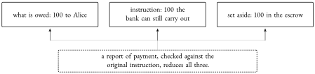
Figure 4. What the machine keeps after the decision. A debt of 100, one instruction for 100 that the bank can still carry out, and 100 set aside in escrow.
These are recorded separately because they can diverge. Suppose Carol disputes the price and a court reduces it from 100 to 80 while the bank still holds the instruction for 100. The instruction cannot be recalled, because only the bank, under its own contract, can establish that it will no longer pay. The new amount owed is recorded, while the instruction and the money set aside are left as they are. No second instruction is sent, since the one with the bank covers the whole of the new amount. If the bank then pays the full 100, the difference becomes a refund of 20 owed to Carol. A later decision recomputes what is owed from what has actually been paid (Proposition 5, Appendix F). Correcting the identity of a payment and deciding a remedy are separate acts. Discovering that two reports describe one payment does not by itself exercise the court’s power to change what one party owes the other.
While a dispute like Carol’s runs, Alice is still waiting, and Carol may replace her agent with one built on a different model. The new agent reads the three records in the machines.
Replacing the operator of the registrar’s machine is harder because the successor must receive everything. The outgoing operator stops accepting changes. The successor accepts a complete snapshot of the records, the decisions, the instructions and what the machine has learned, and only then is the old operator’s ability to write cut off. The successor checks the snapshot against records the outgoing operator does not control and rejects it if it lacks an instruction, a debt or a sum set aside that those records hold (Appendix H). that lacks an instruction, a debt or a sum set aside (Appendix H). A report that arrives late from the bank settles the original instruction at the successor.
Any sequence of accepted steps, whether transactions, joint decisions, corrections, handovers or updates to what the machine has learned, keeps what the machine holds in agreement with what the institution has decided, done and still owes. Every outstanding instruction keeps its possible effects until the bank’s evidence or an authorized ruling settles it (Theorem 8, Appendix H).
6. Institutions that took no part
A month later Carol’s agent arranges to move the company’s equipment abroad, out of one sovereign economy and into another. A sovereign economy consists of the institutions, companies and assets under one jurisdiction’s law. Before the receiving authority permits the import, it has to decide whether to believe the registrar’s entry on who owns the company. It decides for itself, under its own policy or a treaty it has entered, and for a purpose. An entry accepted as proof of ownership for an import is not thereby accepted for a license. We call this selective recognition.
The receiving authority first adopts a mapping from the registrar’s record fields to its own meanings, which its machine tests against every kind of record the registrar declares it can issue. The technical supplement [34] proves that a mapping which passes preserves the receiver’s meanings for all of them (Appendix E). A request to rely on a particular result then carries a zero-knowledge proof that ties the source’s entry to the mapping, the receiver’s policy and the purpose. A refusal records its basis, so that the applicant can respond. Recognizing the entry settles who owns the company, without granting permission to import the equipment. The company and the custodian holding it must also authorize their parts of the movement.
Recognition does not pass along a chain. If B recognizes A’s entry and issues a license on the strength of it, and C recognizes B’s license, whether C relies on A’s entry is still C’s own decision. When a source corrects a record, each receiver that relied on it examines that reliance again. Carrying a correction through to everything that depends on it needs, in general, a complete record of what depends on what and delivery of the change (Appendix E).
7. The first institution
The purchase and what followed it needed a machine at each institution involved, yet a network worth joining only once others have joined gives nobody a reason to go first. A registrar alone still has the check of Section 2. Its machine accepts filings from agents, checks them, issues licenses, keeps the duties that follow and files the reports its law prescribes. It can carry Carol’s purchase as well, sending the payment instruction through the interface the bank already offers, though without the single outcome of Section 3. Between the registration and the bank’s evidence of payment, Alice has then given up her shares and has not been paid.
When the bank joins, the two machines can exchange requests and proofs at once, and the purchase can be decided jointly. Recognition still needs each institution’s policy or a treaty. An institution can file its acceptance of common terms in place of negotiating with each counterpart, so that filings replace up to bilateral agreements, and each institution processes every other’s filing [8] (Appendix I).
8. Learning to apply the rules
A transaction can satisfy every rule and still deceive. A purchase arranged to conceal who controls the buyer passes the same checks as Carol’s honest one. Those who arrange such purchases change their methods as the rules are applied. Before the bank opened Carol’s escrow it had to know its customer. The rule that says so does not say which documents to collect, or whether to test that a live person is present. Those choices are the bank’s procedure, its interpretation of the law in practice. Two procedures can satisfy the same rule and differ in the fraud they let through and in what they cost honest customers.
The machine can learn from this, because the check that accepts each transaction keeps the rule and the exact procedure under which it was accepted. A fraud confirmed later can be traced to the procedure that let it through and to the rule that left the procedure open. The model the machine fits to this record is its institutional world model [3]. A required report goes to the supervisor and gives no one a right to train on the reported facts. Learning needs the rights holders’ permission, but if they decline, the transaction and the report proceed as before.
A fraud detector learns that a pattern of behavior is bad. The world model also learns which way of carrying out a rule goes with more fraud, or with more honest work held up, than another way of carrying out the same rule (Appendix G).
What the machine may change on its own is the procedure, within limits the institution has set in advance. The limits fix what updates aim at, what counts as evidence, which decisions stay with officials and how much delay and cost updates may add. A lesson that points at the rule becomes a proposal to whoever can change the rule. An ambiguity becomes a question for the official entitled to decide it, and the ruling, with its reasons, joins the record. An interpretation learned this way is correct when the rule is applied as the institution’s own authorities apply it. It is safe when acting on it passes the machine’s whole check, like any other change. Before adopting an update the machine also checks that every duty in progress can still be completed (Proposition 6a, Appendix G).
A lesson learned at one institution could help another, but the cases behind it are private. A lesson from elsewhere can make a receiver’s decisions worse [32]. The source signs an inventory of its cases, with their contents hidden. It releases the fitted model with a zero-knowledge proof, a proof of training [33], that the model was computed as declared from every case its stated terms cover. The proof establishes the calculation. The source answers for the truth of its cases and the receiver for the lesson’s fit, so the receiver treats the model as a candidate with no effect. It checks that the source’s categories mean the same at the receiver, tests the model on local cases and adopts it within its limits. If the source later corrects its cases, every receiver refuses further use of the old lesson from the moment the correction reaches it.

Figure 5. Sharing a lesson with a proof. The source releases a model with a proof of its calculation. The receiver verifies it, tests it on local cases and adopts it within its limits.
One learner is a table, fitted at a registrar in another jurisdiction to its officers’ rulings on whether a transfer needs the minority shareholders’ consent and shared with Carol’s registrar in the way just described. The rulings are counted by kind of transfer, and a new transfer then needs no consent, needs consent or still goes to the registrar’s officer, according to the count for its kind. With seven of the eight rulings on transfers under common control requiring consent, the weight is . After six of those seven rulings are reversed, it is . The rule requires no additional consent at a weight of or less. It requires consent at or more and refers the question to the officer in between. Other learners fit a fraud score for each kind of case and a rule of several conditions, learned at a source and shared. All of them count rulings and findings. The design also provides for reading officials’ reasons and for comparing two procedures under one rule, and the companion paper develops both [3].
9. What the results assume
Each result is proved for a finite model of the design, under the assumptions of Section 1 and those that its appendix states.
Two hypotheses concern hash functions. Progress of the decision service rests on one, though the correctness of a recorded outcome does not, and proofs about long histories rest on the other.
Money set aside is an entry in a record, and what it is worth against the payer’s other creditors, an attachment or an insolvency depends on its legal form, which must be named.
10. Mass today
Mass operates thousands of entities. Mass is cash-flow positive.
Mass runs companies today in Delaware, Montana, New York, California, Nevada and Wyoming in the United States, Hong Kong, Singapore, the Abu Dhabi Global Market, the Cayman Islands, the British Virgin Islands and the Seychelles. In Próspera, Honduras, Mass records companies in Próspera’s own registry. Uzbekistan, Kazakhstan, Pakistan, Korea, Indonesia, Botswana and Hainan, China are coming onto Mass.
Reporting to the National Economic Registry (NER) of the United Arab Emirates is live. The UAE pilot is live.
Figure 6. Operating footprint. Mass runs companies today in Delaware, Montana, New York, California, Nevada and Wyoming in the United States, Hong Kong, Singapore, the Abu Dhabi Global Market, the Cayman Islands, the British Virgin Islands and the Seychelles. In Próspera, Honduras, Mass records companies in Próspera’s own registry. Uzbekistan, Kazakhstan, Pakistan, Korea, Indonesia, Botswana and Hainan, China are coming onto Mass.
Pricing what is owed, and ruling on disputes about it, are left to systems outside the machine. Moxie prices and clears claims, which record economic rights or obligations and their outcome conditions. Recourse is a decentralized network of AI courts, which runs dispute resolution and carries outcomes into execution. A dispute resolved there returns as a ruling, with its evidence and reasons, from which the machine learns (Section 8).
11. Conclusion
We have described a network in which each institution keeps its own records behind its own check, the institutions a transaction needs decide it together, and any other institution chooses whether to rely on the result. For finite models, under the assumptions of Section 1, Theorem 4 proves that jointly decided transactions have the effect of some one-at-a-time order, and Theorem 8 that each machine’s records stay in agreement with what its institution has decided and still owes. An institution can begin alone and decide jointly with each institution that joins.
Appendix B. The machine and its programs
This appendix supports Section 2.
Section 2 described the check in ordinary words. The appendices call any change that an institution makes to its records, a transaction included, an act, and they use fixed names for the three results of a check and for the making of a permitted change.
To check a request, the machine first runs it without effect and collects everything it would do: the changes to the records, the instructions it would send to other parties and the duties it would leave. It then tests that whole against the rules in force and returns one of three results. Permit means that every rule that applies is satisfied. Refuse means that a rule fails, and the reason is recorded. Await means that a required question has no answer yet, typically a decision that the law leaves to a named official. The machine cannot supply that decision, so the question stays open, addressed to that official and tied to the exact request. We say that the machine admits a change when it has permitted the change and made it.
The check applies to the act. An open-weight model, a closed model or a person may have prepared the request, and each meets the same check. The choice of model therefore has no bearing on what can be done to the register. It bears on what is attempted and on how well the work is planned.
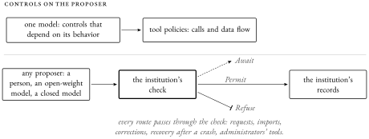
Figure 8. Where the check sits. Controls on a proposer constrain one model or one tool. The institution’s check stands at its own records, applies to every proposer, and lies on every route to the records.
The registrar’s machine can change the register, and it cannot make the bank pay. Its record therefore separates what the registrar has done from what it has asked of others. Entering Carol is the registrar’s own act. The instruction to pay Alice is a command to another party, and the machine records that it was issued and that the bank may still carry it out. The payment is recorded only when evidence of performance arrives from the bank and is admitted. Between those two moments the purchase is registered and unpaid, and the record says exactly that.
A program can also stop partway, because it is waiting for an official’s answer or for the bank. The machine then keeps what the program needs in order to resume: the steps not yet run, the commands outstanding and the duties still owed. We call this the program’s unfinished work. For the registrar’s part of the purchase, a Permit allows Carol to be entered as holder, once, with one payment command left outstanding as unfinished work. A Refuse, or an answer still awaited from an official, leaves the register exactly as it was.
B.1. The machine’s state, its steps and its adoption
A check needs rules to check against and a record of what it decided, so the machine holds more than the register. Write the state of institution ’s machine as
[ X_i=(C_i,H_i,S_i,K_i). ]
The context holds what is in force: the rules, the powers, the policies for recognizing other institutions’ results, the procedure for applying the rules to cases, and who may change any of these. The history holds sources and the records of past checks. The state holds positions, resources, amounts set aside and the possible effects of commands that are not yet resolved. holds work in progress, which is the unfinished work just defined. An admitted change is a step
[ X_iX_i’, ]
in which principal proposes the exact effect , and is the supporting record of authority, evidence and execution. Every step accounts for the work in progress that it affects. Each machine is one node of the network, and a node’s service may run on several replicas for reliability. These are copies of one institution’s machine under that institution’s control. They are distinct from the replicas of the decision service in Section 3, which different parties operate.
The supporting record matters because an institutional act is rarely a single step. To change a company’s name, the board proposes the change, the shareholders approve it, an officer records the approvals and the amendment to the company’s constitution, a registered agent files the amendment, and the registrar enters the new name. Each step has its own actor, its own authority and its own evidence, and where a step rests on someone else’s statement the record shows whose it was. The machine keeps this for every step, so that an inquiry held ten years later can establish who authorized the change, whether that authority was current and when the change took effect.
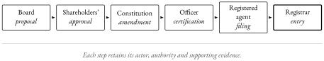
Figure 9. An act is a chain of authorized steps. A change of company name passes from board to shareholders, officer, registered agent and registrar. Each step keeps its actor, its authority and its supporting evidence.
The opening of this appendix separated what the institution has done from what it has asked of others. In full there are four kinds of effect.
| Kind of effect | What it is | In the example |
|---|---|---|
| The institution’s own act | The exact admitted change to this institution’s authoritative records. | The registrar enters Carol as holder. |
| An instruction to another party | A command, the right to have it executed, the resources set aside for it, and whatever it can still cause. | The command to the bank to pay Alice 100 from Carol’s escrow. |
| Evidence of performance | Admitted evidence that the other party performed, with its source and permitted uses. | The bank’s confirmation that Alice was paid. |
| Recognition | A receiver’s reliance on specified evidence from another institution, for an identified purpose and act. | A foreign authority relies on the registrar’s entry (Section 6). |
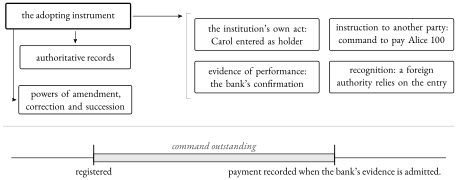
Figure 10. The registrar’s act and the bank’s performance. Registration changes the holder while the command to the bank is still unresolved. Establishing payment requires separate evidence of the bank’s performance.
One distinction from legal theory shapes what the machine records. A legal power is the capacity to change legal positions, and it differs from permission: an act can be forbidden and still take effect [9]. If the governing law makes a share transfer effective even though it breaches a separate shareholders’ agreement, the register must show the transfer. The breach can support a remedy, and reversing the transfer is for the authority that has power over that remedy. So the machine records what took effect and under which power, and it treats a correction as a further act that needs its own authority. Appendix F relies on this.
Adoption. The machine’s acts count as the institution’s acts because the institution has adopted the machine by a formal instrument under its own law, in the way it would authorize an officer to act for it. The instrument names the authoritative records, the acts the machine may perform, who may amend the rules, and how errors are corrected and an operator replaced. Adoption gives the machine no power that the law has not given the institution, and making law and taking decisions reserved to officials stay where they were. Three documents have distinct roles. The instrument by which the institution adopts the machine supplies institutional authority. Its deployment terms give the machine’s steps their institutional meaning, as acts of the institution or as instructions to another actor, by fixing the institution, the authoritative state, the acts, the effects, the effective time, the powers of amendment, correction and succession. A technical execution profile fixes the supported syntax, the semantics and the operations the machine offers. The machine controls every write to the protected records, including imports, callbacks, correction and recovery, and server keys control access to it.
The institution keeps the powers that the instrument specifies over keys, admissions, governing rules and the replacement of the operator, and it can pause and resume admissions under those powers. A pause leaves earlier duties and commands already sent to their existing contracts. For the purchase, the instrument makes the designated shareholder register authoritative for registered membership, and it specifies the powers of amendment and the admission of judgments, disputes and binding orders from outside. The machine can identify a conflict between represented rules or an unanswered question, and it can support learned application within a mandate. Those computations do not create a power that is missing.
Who stands behind a machine. The design keeps apart the parties that stand behind a machine. The sovereign makes the law. The institution owns the record and the powers. The operator runs the machine and, where the institution has delegated it, decides each case within the adopted rules and answers for that work. Keys hold the parties apart. One key, held by the institution’s officers by a threshold among them, adopts and amends rules, appoints and replaces the operator, and pauses the machine. A second signs the machine’s acts and can sign only what the adopted check has passed, and nobody signs with it by hand. The operator’s key runs the infrastructure, and it can stop the service and can neither change a rule nor sign an act.
Each record of a decision binds what the operator supplied, so that it can be reviewed. The requests the machine receives are ordered by the machine’s own sequence and acknowledged, so that what was acknowledged can be audited. A proof that the adopted check passed shows that the rule was not broken.
Appendix F.4 says in prose who answers for each kind of error. The design sets that account beside these roles.
| What went wrong | Who answers |
|---|---|
| The adopted rule does not say what the law says | The institution that adopted it, and the operator for its own work, where the encoding was its work |
| The rule was right and a case was decided wrongly under it | The operator |
| A decision reserved to an official | The official’s institution |
| A fact from an issuer was false | The issuer |
| The decision service recorded two outcomes | The parties whose replicas signed both |
| A counterparty did not perform | The counterparty |
Whether an act wrongly admitted under a right rule stands is for the law of the register.
Making a breach visible. Every admitted step can produce a signed record of itself: the state before, the state after, a commitment to the request (a value that fixes the request without revealing it), the identity of the adopted checker, and the result. An answer about a record then comes with proof that the entry belongs to the state those records lead to. A change made behind the machine alters a copy, and the copy fails its proof. Whoever verifies checks two more things, that the checker is the one the institution adopted and that the chain starts from the adopted first state. That an entry is in the history and that it is the entry now are different claims, and a current answer has to be asked for afresh. Trust remains in the component that signs, which has to hold the whole admission check with all its inputs. The strongest form is a record that carries a proof that the adopted check passed, and the private admissions of Appendix D.2, by which each institution proves its part in a joint decision, are proofs of this kind. An institution can also have outside parties countersign its latest state at intervals. An answer can then be given under the institution’s signature alone or under a countersigned state, and the receiver decides which it needs.
Within the state , founding an entity creates it and its powers, an amendment changes the context, and a provider’s report supplies evidence that an instruction was performed and revises what supports it. Where a step rests on another’s statement, an issuer answers for what was presented to it, and another participant remains responsible for a fact outside that attestation.
In the ownership profile, the declared profile for a share register, the registrar constitutes company-7 and keeps authority over the register. The company’s owner receives powers of appointment, amendment and revocation and appoints an operator. Each derived power is checked against its predecessor’s power when it is granted and against current rules when it is used. A configuration epoch identifies the rules and authority in force, and a request revision identifies the current request. The request binds registry-A, register-A:ownership, company-7, rule ownership-7, the current revision and epoch, and the stage of use Admit.
B.2. What a check records
The procedure in force. The outcome of a learned check depends on a complete procedure, which binds the parameters, the meanings of the features, preprocessing, retrieval, calibration, the treatment of uncertainty, the policy on consequences and the semantics of inference. It also fixes the runtime, the permitted uses, the normative scope, the revisions of its sources and its evidence. Changing a threshold or a feature pipeline can change how the rules are applied without changing a single weight. Local training, shared parameters, delegated training and local adapters all require adoption.
The record of a check. A check binds the source of authority, the rule, the exact revision of the request, the subject, the objects, the purpose and the stage of use. Its record keeps whether the rule applied, the exemptions, the conditions, the unanswered questions, the duties that remain and the restrictions on disclosure, and the result (Permit, Refuse or Await) summarizes that record. A learned check also binds the complete procedure and the actual cutoffs of its features, inputs and retrieval. The machine computes or verifies the adopted inference and rechecks what the result depends on at the moment of effect.
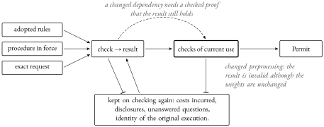
Figure 11. A result is tied to the procedure that produced it. Changed preprocessing invalidates an earlier result even when the weights are unchanged. Checking again keeps the costs already incurred, the disclosures made, the unanswered questions and the identity of the original execution.
Suspended questions and continuing cases. When evaluation stops at an unanswered question, the machine records the question by attempt, program, term and position, together with the schedule, the captured context, the costs and the disclosures, so that resumption can settle the question without repeating completed work. An unanswered question cannot become false because evaluation stopped, and the effects of checks that were required survive even when their consequences lose priority. A continuing case links attempts, revisions, identity findings and earlier contexts. A fresh check that is authorized after a refusal keeps the expenditure already made and the original institutional intent of the right to execute, which prevents a second register entry or a second payment command.
Decisions reserved to an official. The answer must name the exact request, the question, the official and the epoch of that official’s authority. A positive answer supports Permit only together with every remaining requirement (supplement §G.2, Lemma N1). Several separately trained models may give recorded advice to the official. The official supplies the attributable decision and its reasons, including any departure from the advice, and learning from the decision or its reasons requires the permissions of Appendix G.1.
A separate stipulated case follows that authority through disagreement and correction (supplement §§P.1–P.3). One adviser recommends no additional consent and another recommends waiting. The appointed official requires consent on the basis of a voting pact. The affected party receives the permitted grounds and produces a dated amendment that the authenticated source record had omitted. A reviewing authority stays the pending act, obtains the correction from the source and reverses the decision. A current fit, its adoption, reconciliation of the case and lifting of the stay all precede registration. An earlier completed purchase stays recorded, and its original payment command continues to performance.
Holds. A hold for investigation records its adopted basis, the exact question, its original start, its deadline and its route of review and challenge. These records distinguish a fast machine check from the time needed for an official’s answer or for outside performance. An institution can automate its own handoffs. Removing a handoff between two institutions requires both to support the necessary execution and service contracts.
The order of evaluation. An exception pairs a guard, which says when it applies, with a body, which gives its consequence. Evaluating a rule can itself use resources or disclose information, so the order of evaluation can change what happens before any consequence is selected. If the default is evaluated eagerly, it can ask an official for a decision that an independently satisfied exception would have made unnecessary, and delaying the bodies avoids the request. The three procedures below keep their distinct orders.
| Adopted procedure | Checks performed | Selected consequence |
|---|---|---|
| Eager Lex procedure | Default, then source-order guards and every satisfied body. | Priority selects the resulting value afterwards. |
| Latent-consequence procedure | All guards in source order. Consequence bodies remain latent. | With distinct priorities, evaluate the highest-priority satisfied exception’s body, or the default body when no guard succeeds. |
| Priority-selected procedure | Guards in descending priority order, stopping at the first true guard. | The selected body, or the default when every guard is false. |
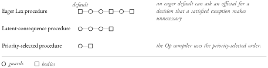
Figure 12. Three orders of evaluation. The Op compiler uses the priority-selected order for rules with exceptions and permits constituents that have effects. Full correspondence with eager Lex evaluation also requires the effects and order of the checks to match. Supplement §K.19 gives the attestation example and the exact boundary of the compiler. Unanswered questions and effects already incurred are kept under whichever order is adopted.
B.3. The languages, the types and the checker
A machine evaluates programs, so a statute, a policy manual or an instruction typed to an agent is first written as one.
Mass uses two languages. Lex expresses rules: what is permitted, the exceptions, who holds which authority, time limits, and the questions that must go to an official [1]. Op expresses operations: instructions, their effects and the resources they use [2]. Both compile to one typed bytecode, which is what the sovereign virtual machine checks and executes. The legal rule and the operation meet there, and a proposed operation is admitted only if it satisfies every encoded rule that applies to it.
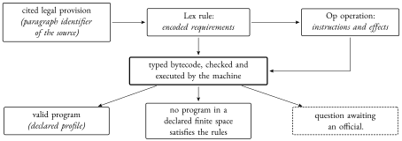
Figure 13. From a provision to a checked operation. A cited legal provision is encoded as a Lex rule, and an Op operation is checked against the rule’s requirements. A valid program, a proof that no program in a declared finite space satisfies the rules, and a question awaiting an official are three different results.
In the typed bytecode every value carries whose it is and what it is for. A request binds the authority under which it is made, the entity acted for, the subject, the act, the objects, the purpose, the recipient, the revision of the request and the stage of use. The purpose ties a power to spend to the use for which it was granted. The revision identifies which version of the request is current, and the stage of use identifies the operation for which a piece of evidence is being checked. Together these fields distinguish the actor’s capacity, eligibility, the power to spend, the instruction and the eventual receipt. A mandate from Carol supplies the power to transfer from her escrow and says nothing about her eligibility to hold the shares, which is checked separately. Resources are typed in the same way, each with an owner, a unit and permitted uses, and moving a resource makes the old reference to it unusable.
On the purchase, the typed request reads: change the holder of the company from Alice to Carol, and command payment of 100 to Alice from Carol’s personal purchase escrow. The registrar’s machine meters its own work in service units, which are separate from cash, and in the example the registrar starts with 100 of them. If the result is Permit, the holder changes once and seven of the 100 service units are consumed. All 100 currency units in the escrow are reserved, no cash has been spent, and one payment command is outstanding. In this example one machine carries its own account of the escrow, so its Permit makes the reservation itself. In the purchase of Section 3 the escrow is the bank’s record, the bank’s machine locks the 100, and the reservation takes effect at Commit. If the result is Refuse, or if an official’s answer is still awaited, the holder and the cash are exactly as they were.
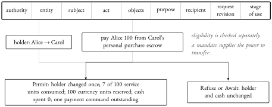
Figure 14. The purchase as a typed request. Permit changes the holder once, consumes seven of 100 service units and reserves all 100 currency units, with nothing spent. The unfinished work keeps one payment command, the result of its check, its disclosure restrictions and its reserve until the payment is reconciled. Refuse, or a missing answer from the official, leaves holder and cash unchanged.
The same representation applies to the parties. We call a company or other legal entity a programmable legal entity when its constituted powers, its agents’ mandates and its operations have executable representations of this kind, as they do for a company formed on the network (Appendix I.1). It is an autonomous business when agents run it under a mandate that it has adopted, and after the purchase Carol’s company operates as one. Its duties are part of its executable representation, and only an amendment or a ruling made with proper authority can alter them.
The checker verifies control flow, assignment, ownership, effects and bounds on the use of resources. Branches that run in parallel receive disjoint resources. Where a program can take one of several paths, the check keeps the duties that survive and the possible effects of every path. Where two paths rejoin, evidence must hold on every incoming path or identify the path taken. When something that a result depended on has changed, the result needs a checked transport that proves it valid in the new context, and otherwise it is invalidated. Types make it possible to check each module on its own, and they add no behavior to the corresponding untyped language.
When no permitted program has been found, three results are kept apart. One candidate was refused. A finite exhaustive planner has established that no policy in its declared space satisfies the constraints. Or a typed question that is reserved to an official awaits the answer of its designated authority.
Appendix A of the supplement specifies certificates, checkable in both directions, from source through intermediate forms to bytecode. They cover results, effects, ownership, evidence, duties and suspension. Private code must match the commitment under which it was adopted.
How faithfulness is established. Whether an encoding is faithful to the legal text is for the institution that adopts the rule to establish (Section 2). A proof that two things say the same needs two formal objects, and an ordinary statute does not supply one. A rule-maker can supply one by enacting a formal text. Each adopted rule carries a status, recorded with who conferred it, the version of the text encoded and the rule’s place under higher law. A rule is enacted when the rule-maker adopted the program as a text of the rule, certified when the authority entitled to interpret the rule approved this encoding, and provisional when it is the adopter’s own reading, with its evidence. The design also prescribes checks that give numbers. Two encodings are made independently and compared over every case of a schema written by a third party, and each difference is traced to the reading that causes it. Every word that carries a condition is shown to be implemented, with the links checked by someone other than the encoder. The encoding is run on decided cases, as finally determined, with half held back. Every condition and exception is decided both ways by some independently labelled case. The rule is altered on purpose, and the cases are required to catch each alteration. And for a period the machine runs beside the officials. The machine’s part is to find where the text leaves the outcome open and to send exactly those points to the official entitled to decide. The official’s answer is recorded with its question, the request it was given on, the authority under which it was given, the cases it reaches and whether it is under review. Within that reach it settles the question and serves as a test for later encodings. It changes the rule for other cases only if a body with power to amend the rule adopts it.
B.4. The finite language and Theorem 1
The check rests on the agreement between what a program says and what the machine does when it runs the program. For a small language whose programs are built from single acts, sequences and two-way choices, we prove that agreement exactly. Running the compiled program on the machine produces the records, the stopping point and the unfinished work that the source program specifies, and every change it commits satisfies the rule that applies to that request (Theorem 1 below).
For the full languages, agreement on the verdict is not enough. A compiled procedure has to agree with its source on ten things: the verdict; the changes to the institution’s own records; the commands to other parties; the duties left; the charges incurred; what was disclosed; the questions raised for an official; what is left to run; which records were read or written, and how; and which institutions’ approvals the act therefore needs. The last two matter to everything in Appendix D. Suppose a rule permits a transfer on either of two conditions, one read from the registrar’s record and one from the bank’s, that both hold, and that testing either costs and discloses the same. A compiler that tries them in the other order then changes nothing in the first eight and changes whose record is read, and so which institution has to take part and what it learns. An adopted procedure therefore fixes one order of evaluation, and a change of order is a change of procedure, adopted as one.
The source syntax is
[ p::=(q)p;p (b,p,p). ]
Here is a Boolean that has already been supplied, and the language has no exceptions with effects. A request binds the register, the complete intent, the rule, the authority and the stage of use, and the intent distinguishes the holder, the payment recipient, the amount and the quantity of service. The source rules specify separately the reservation of service, the institution’s own act and the instruction to another party. The translation to the machine’s more concrete instruction form maps an act to LoadAndUse(q,q) and preserves sequences and the selected branch. The checker accepts exactly this translation. The machine’s two slots load the result of a check and produce an effect for the same request.
Write and for the states before and after a step and for the recorded result of the check. specifies the source step, and computes its counterpart on the machine.
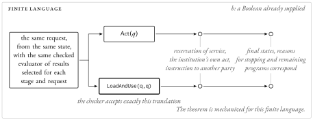
Figure 15. The finite language and its translation. The correspondence compares the same state, the same request and the same checked evaluator of results, including what is left over when execution stops. The checker accepts exactly one translation. The theorem is mechanized for this finite language.
Lemma 1 (Atomic correspondence). For the finite profile, holds exactly when returns .
Proof. The machine’s context check tests the same full request, register, current authority, epoch and applicable rule as the source premise. Reservation checks the available quantity of service and the absence of an earlier reservation or act of the institution, then subtracts and reserves that quantity.
Execution of the institution’s own act removes the first exact reservation and inserts the same register act, duty and result as the source rule. Induction on the list of reservations establishes that the two removals are equal.
Instruction checks the existing duty and the absence of the same command, then inserts the exact recipient and amount. All remaining fields are unchanged.
Each failed test on the machine contradicts the corresponding source premise, which gives both directions. ∎
Theorem 1 (Correspondence of source and effect, for the finite language). Start a source program and its accepted translation from the same state, and let both use the same checked evaluator of results, selected for each stage and request. Then their final states, their reasons for stopping and the programs they leave to be run correspond.
Each committed effect satisfies the represented rule selected for that exact request. Execution of the institution’s own act sets the admitted holder and preserves every other object. If the invariants on the service account, on duties and on the uniqueness of effects hold initially, they continue to hold.
Proof. Validation of the translation gives equality with the computed translation. Induct on the source syntax. The case of a single act is Lemma 1. At an act that has already been checked, Refuse and Await keep the machine’s current state and leave the act unexecuted.
A sequence passes the state reached by a completed first part into the second part, or keeps what the first part left over, followed by the second part. A choice uses only its selected arm. This establishes equality of outcomes and of what is left over, in both directions.
For a committed act, the Permit branch of the checked result implies that the selected rule expression is true and that every required answer has the exact question, official, request and epoch. Insertion of the institution’s own act makes its holder the register’s current projection for that object, and other objects skip that insertion in their projection. The instruction projects the distinct payment recipient and amount from the same request.
The service account sums the available, reserved and consumed quantities. Reservation uses under , and execution of the institution’s own act moves the same from reserved to consumed. Instruction changes neither. Exact checks of absence prevent a repeated act or instruction. Induction composes these equalities with the retained duties and history, including the prefix before a refusal or suspension. ∎
Supplement §§G.1–G.5 give the finite source and machine semantics and their correspondence proof in full. A check keeps prior events, and service units stay separate from cash. The machine compares its complete successor state with a source transition that is computed independently.
B.5. Carrying an admitted act into the accounts
An admitted act has to enter the accounts of Section 5 exactly. The import checks the owner, the estate, the unit, the purpose, the beneficiary, the occurrence of the institution’s own act, the original command, the reserve, the consumption of service, the disclosure and the unfinished work. It preserves the records of unrelated estates and distinguishes the historical admission from the current balance. Write commandPossible for the amount that the original command can still pay.
Lemma 1a (Exact economic import). In the supported initial-admission profile, the import checker accepts exactly the economic interpretation of the checked successor of the institution’s own act. With initial cash and payment amount , it establishes
[ ++=B, ==m. ]
The imported owner, estate, unit, purpose, beneficiary and unfinished work equal their adopted source fields. The ownership occurrence has quantity one in its own unit. Installation preserves existing unrelated entries and rejects reused pool, duty, command or occurrence keys.
Proof. The check of the institution’s own act establishes the independently defined source transition and . Structural equality compares the candidate import with the complete typed interpretation of that transition. Substitution gives free cash , held cash and spent cash zero, hence .
The constructor copies the exact funding and request fields into their distinct economic roles. Installation checks every fresh key before prepending the entry and leaves the existing list unchanged. Supplement §G.8 states the finite import check and proves that it preserves these fields. ∎
The machine computes the step without durable effect, checks this import, and commits its own state and the accounts with one receipt. A retry recovers the original act and command and returns the current unfinished work separately. Administrative and recovery routes use the same boundary. A checker extracted from the proof tests the actual successor that the machine produces, and its projection into the accounts, before commit. Its strict decoder admits the declared profile, the map of roles and bounded quantities, and correct decoding, extraction and runtime are assumptions. A rule for payments reduces cash and the possible payment by the quantity received while preserving the original admission (Figure 4). Identity findings and remedies use other transitions of the journal, and Lemma 1a concerns the initial import only.
Appendix C. Private verification
This appendix supports the private proofs of Section 2.
The rules ask about facts that the registrar is not entitled to see. Whether Carol may hold the shares depends on a credential issued to her, and whether the 100 is there depends on her bank’s ledger. If verifying a fact meant collecting the file behind it, each institution would accumulate the others’ customer records, which none of them is permitted to hand over.
A zero-knowledge proof lets one party convince another that a stated condition holds of data that the second party never receives. Suppose the registrar’s rule requires the buyer to be an adult. The issuer of Carol’s credential has signed a commitment to her age, which is a value that fixes the age without revealing it. Carol’s agent presents the commitment together with a proof that the age behind it satisfies the rule, and the age itself stays with Carol. The bank can prove in the same way that the escrow holds the funds the purchase needs.
A proof of this kind is of use to the registrar only if it is tied to the matter at hand. The statement that is proved therefore names the rule, the issuer’s current commitment and the exact request. A proof made for one request cannot be presented for another, and a proof made before the credential changed fails against the current commitment. The registrar’s machine takes the list of issuers it trusts, and the rule to be satisfied, from its own records, and nothing that arrives with a request can choose them.
The proof hides the evidence and nothing else. The statement that was proved, the visible effects of the act, a refusal and the timing of each step can all be observed. The machine therefore counts them as disclosures, and the holder of the evidence authorizes each use.
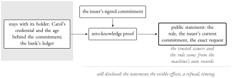
Figure 16. What the registrar verifies and what it never receives. The private evidence stays with its holder. The registrar’s machine receives a proof and a public statement, and the statement and the visible effects of the act are still disclosures.
C.1. What a proof states
A tentative execution produces the complete set of proposed changes to the protected records, together with the commands, the use of resources and the duties that would remain. The machine then covers every applicable requirement in one of three ways, by evaluation, by an authorized reuse or by an authenticated exemption, and it checks that each such disposition matches a requirement that applies. A requirement whose scope is unknown waits for a determination.
The statement that is proved binds the adopted profile, the current commitments to the sources and the complete effect. Each evaluation adds its source rule, its certified bytecode, its trace and its arguments. The private inputs supply credentials, facts, chains of authority or execution records. The machine checks the statement against inputs that it protects.
C.2. Private facts against private criteria
Appendix C of the supplement evaluates private facts from a source against private criteria of a receiver across seven computational server roles. An escrow custodian, for example, can supply private funding facts while a receiver supplies its private criteria for admission. The seven roles are computational participants and are separate from the legal institutions whose powers are checked. Privacy and availability tolerate a static corrupt set of at most two roles.
The proofs bind the encrypted inputs, the openings that recover and verify committed values, the complete views of the execution and the resulting state. Valid inputs, invalid inputs and padded dummy inputs use the same schedule, which hides validity. Answers are released only after the matching Commit. Before anything is exposed, the accounting of disclosure covers answers, effects, refusals, timing and openings, including disclosures that survive an Abort.
C.3. Views and flags
A view binds the information released to its channel of delivery, its recipient and its permitted use. An agent acting for the company and a supervisor exercising a power of oversight may receive different authorized selections from the same underlying record. Public proof statements, visible effects and timing are disclosures and are accounted for as such. An exception that the institution adopted in advance may authorize a wider investigative view after a specified finding by an authority with the power to make that finding, and opening the view is itself an admitted change.
Within authorized access, an internal analysis can flag spending that is inconsistent with an organization’s purpose and refer it under an adopted procedure. The flag is a disclosed output and is subject to its terms of release. By itself it supplies neither an adjudicated finding nor any additional power to investigate.
C.4. Proofs of histories
Three kinds of proof compose. An Exec proof verifies one execution. A Merge proof verifies a permitted combination of compatible executions. A History proof verifies its certified predecessor and one new Exec or Merge proof. Each parent checks its children’s proofs and the statements that bind program, context, request, effects, duties and permitted output. A strictly decreasing ancestry rank excludes circular histories. Imports keep the assumptions of their ancestors and the cumulative loss of security, and custody preserves the evidence for later questions.
The recursive proofs of private histories rest on a hypothesis, Recursive Oracle Fidelity (supplement Appendix D, Definition 1). It transfers the stated guarantees of extraction and simulation from idealized random oracles to concrete hash functions.
C.5. An age condition
The ownership profile adopts the condition that an age lies in the inclusive interval . Public verification opens a Pedersen commitment signed by the issuer, and private verification uses an aggregated Bulletproof [5]. Supplement §§L.1–L.5 give the derived interval commitments and the argument that no arithmetic wraps around.
The statement binds the subject, the issuer, the condition, the snapshot of the source, the exact operation and the protected predecessor state. It authenticates the age as of that named snapshot. A requirement about age at a later date needs evidence that satisfies the applicable contract for a current source, and the machine’s checks of authority, of the result, of funding and of the successor state still apply.
The construction uses Bulletproofs, Ristretto commitments and pinned Ed25519 issuance. It assumes adaptive knowledge soundness of the range proof, Pedersen binding, hardness of the discrete logarithm, the signatures, a random oracle, and a correct implementation with sound randomness. The identities and effects of operations remain public, and the privacy of the age is relative to what the receiver already knows and to the conclusion disclosed.
A proof occupies 544 bytes. Public and private verification admit the same current transition under their own permissions to disclose.
Appendix D. Scope and the joint decision
This appendix supports Sections 3 and 4.
Section 4 said that each institution keeps a list of the powers, relationships and limits that its machine must take into account. The appendices call that list the institution’s catalogue. From the catalogue and the complete effects of a proposed act, the machine derives the act’s scope: every power the act requires and every record that its checks read. The scope of each of the two loans contains the other subsidiary’s debt, although the loan does not change it, because the conclusion that the limit still holds was read from it. Everything in the scope is locked, the records that are only read as well as the records that are written.
D.1. Scope
Requirements that were drafted separately come to depend on one another as amendments accumulate, as the two loans of Section 4 depend on one limit, and an adversary can use the gap between two checks that are each correct. The institution adopts a catalogue of the powers, relationships and aggregate constraints that its scope checker must consider, and we call what the catalogue contains represented. Scope is computed from the complete tentative set of changes together with the commands, resources and duties. The expressions involved contain named reads, finite lookups, arithmetic, conditionals and typed comparisons. For an expression , write for everything it can read, which includes every syntactic branch and every reachable entry of a lookup. For a learned check, includes the actual procedure in force with its features, calibration, thresholds and source cutoffs. The fact that a record was observed to have no influence on a result cannot justify leaving it out, because the record may matter under a concurrent change.
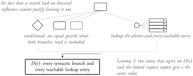
Figure 17. What an expression can read. The set contains every syntactic branch and every reachable lookup entry of . Two states that agree on and on the bound request inputs give the same value (Lemma 2).
Lemma 2 (Complete support). If two states agree on and the bound request inputs, they give the same value to .
Proof. Constants read nothing, and a read contributes the cell it names. For each operator, the induction hypotheses give equal argument values. A conditional has an equal guard and an equal value of the selected branch, because includes what both branches read. A finite lookup includes the selector and every reachable entry, so equal inputs select equal values. These cases exhaust the expression language. ∎
Each relationship in the catalogue declares three things. Its presence predicate determines whether the relationship exists in a state. Its rights projection gives the rights it represents. Its amendment selector identifies the powers needed to change it. (This is unrelated to the rank of Appendix G.5.) For a set of records to be written, the checker examines every relationship whose reads intersect and protects
[ U_j=D(p_j)D(_j) ]
even when the rights projection is the same before and after. If the projection changes, the checker adds what the selector reads and the powers it selects. A relationship that is absent keeps its dependencies on presence and membership. An aggregate constraint adds everything it reads and its governing power. The powers needed for the direct writes, for the commands and for prerequisites complete the scope.
Proposition 3 states what this construction covers. In it, a considered right is a right represented by a relationship that the checker examined, and the evidence for a conclusion that it is unchanged is the protected set .
Proposition 3 (Authority coverage). In a complete adopted catalogue, the derived scope includes every represented power and dependency required by the actual proposed effects. This includes the evidence supporting each conclusion that a considered right is unchanged.
Proof. Direct changes enter through the definitions of their writes and commands. Every represented relationship that a write can influence has reads that intersect the writes and is therefore examined. While those reads are protected, Lemma 2 preserves both the relationship’s presence and its compared projection.
If the projection changes, the selector supplies the required powers under the same protected states before and after. If it does not change, keeping the reads protected preserves that negative conclusion.
Aggregate predicates and prerequisite powers follow their declared dependencies. The enumeration covers the catalogue. The completeness of the catalogue with respect to the institution’s applicable rights remains part of its adoption by an authority with the power to adopt it. ∎
Coverage is therefore relative to the adopted catalogue. An instrument made with proper authority can bound the profile by declaring certain positions conclusive and by providing a route for orders from outside. Beyond that boundary, missing evidence or a missing decision has to be entered before complete coverage is claimed.
Who writes a catalogue, and what completeness takes. The design gives each kind of entry a writer.
| Source of a constraint | Who writes the entry | How |
|---|---|---|
| The institution’s law, policy and regulation | Nobody by hand | The compiler derives what each adopted rule reads |
| An entity’s constitution, such as the group limit of 100 | The entity, by filing | For a programmable legal entity the constitution is a program and its entries are derived in the same way |
| A private right, such as a pledge of Alice’s shares | The holder of the right, by registering a notice | The institution’s machine admits the notice like any change |
| An order from outside, such as an injunction | The authority that makes it | The adopted rules name each class of outside order and the source the machine reads for it |
Completeness takes three separate things. The first is a rule of law that settles what an unrecorded right can do against a registered act, because no machine can certify that an unrecorded right does not exist: two worlds that return the same catalogue, one with an undisclosed contract and one without, look the same. The second is that every registered right reaches the collection that is searched. The third is that what a search found, including that it found nothing, is protected until the outcome, which the supplement constructs. The design adds one rule: a catalogue lists the classes of constraint it does not represent, and an act that touches such a class is held for an official.
A two-variable example shows why the reads behind an unchanged right must be protected. Let at , and suppose that changing requires power . Two operations are prepared separately, and . Each alone leaves at zero, and each conclusion that the right is unchanged reads the other operation’s input. Protecting that read conflicts with the other operation’s write lock. After one commits, the other must be evaluated again and then requires .
Comparison with Daml and Canton. Compare two ways of running this example under the same complete adopted catalogue, faithful encoding, truthful sources, legal powers and provider commitments: prechecks that omit dependencies, and an application written natively for Daml and Canton. Both authenticate their inputs, check authorization by the parties, commit atomically and enforce that each named resource is consumed at most once. Atomicity binds the declared effects. Protecting the reads that support them is a separate matter of isolation or validation.
In the first arrangement each update consumes its own distinct write authorization. A truthful precheck at reports that its update leaves unchanged. The composition keeps the declared dependencies of each transaction and discards what that conclusion was read from: omits , and omits . Both updates can then commit with authentic certificates and distinct authorizations, producing without power . The transaction service still enforces signatures, atomicity and single consumption. The omission invalidates the evidence for leaving out.
The native application represents and by versioned contracts. Each transaction fetches both current contracts to evaluate the condition. Transaction consumes the current contract and creates its successor, and does the same for . Daml records fetches, and Canton validates referenced contracts and locks those consumed by an update [14, §3.4] [15, §3] [16]. Validation rejects an input version that is locked for consumption or already archived. Under these native premises of visibility and trust, the two stale transactions cannot both commit, and after either update a fresh evaluation requires for the other.
The native construction protects the supporting reads that its application represents. Derived scope makes coverage of the complete adopted catalogue a requirement of execution. Both accounts rely on a faithful representation of the institutional relationships and on the stated premises about sources, authority and service.
D.2. Locks and Theorem 4
Section 3 described the joint decision in ordinary words, and the names used below are these. The request that states the whole act, with the change to the register, the command to pay and every record the act depends on, each with its version, is the joint request. Each institution’s machine checks the joint request under its own rules and for its own part and locks the records that its part depends on, and at this point neither machine has changed anything. Only when every institution in the scope has locked does each give its approval. For the purchase the decision service records Commit if both institutions have approved this same request and Abort otherwise. An intermediary that carried out the two steps of the purchase in turn could fail between them. The decision service records the outcome. It carries out neither step, holds neither record, exercises no authority, and cannot supply an approval that an institution has not given.
On the purchase, Commit makes two things true at once. Carol is the registered holder, and the command to pay Alice has been issued against the 100 in the escrow, which stays set aside for it. Commit does not make it true that Alice has been paid, because payment is the bank’s performance and is recorded later from the bank’s evidence. At that moment Alice has given up her shares and holds a right to be paid from the 100 set aside in the escrow, and until the bank pays she relies on the escrow and on the bank. Abort means that nothing new from this attempt takes effect, and whatever existed before the attempt stands.
While the decision is being made, a lost message cannot split the outcome. The locks placed during preparation are released only by the recorded outcome and never by a participant’s own timeout. An institution that hears nothing asks the service, which answers from its record without waiting for anyone else. If the approvals do not arrive before the request expires, the outcome is Abort, and it is the service that records it.
An institution that has locked for a joint act keeps its locks until it holds the recorded outcome and has acted on it. It can take the signed record from the decision service or from any party that holds it. If the service has recorded nothing and cannot, or if the institution can reach neither the service nor a holder of the record, it waits. What the wait holds is what the act locked, namely the records it would change and the records its checks read.
The design provides for a joint decision that stays open too long. A joint request can state the longest time it may stay open and the forum that may then be asked, which is a forum the institutions agreed on or the competent court. The forum can establish from what was signed what the outcome was. Where it cannot, its order is a separate act and not the outcome of the original request, and it can free a record only with cover against the other outcome having happened.
After Commit, the lost message is the one in the introduction: the bank’s acknowledgment never reaches the agent. The payment command was given a fixed identity when it was issued. A retry presents the same command under the same identity, so the bank answers with the status of that command and has no way to treat it as a second one. While the status is uncertain, the 100 stays set aside in the escrow and the duty to pay Alice stays on the record. The agent is therefore never forced to choose between declaring completion and paying twice. It asks, and the answer is in the records.
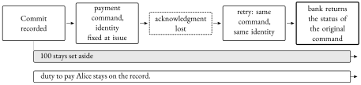
Figure 18. A retry asks and does not pay again. The retry carries the identity of the original payment command, and the bank returns that command’s status.
The scope identifies the required institutions. Each admits the same joint request (the manifest of the supplement), which binds the complete effects, the versions of everything depended on, the rule contexts, the procedures in force, which operator is currently authorized at each institution within its history of succession, and the decision service. The institutions may use different models. Private admissions prove each institution’s contribution against the expected profiles, the authenticated roots of authority, the scope, the locks and the recorded outcome. A proof called ContextJoin binds the grants of locks to the completed execution (supplement Appendix E.4), and preparation, final admission and history all require this joined relation. The designated replicated service records one recoverable outcome (supplement §H.6). The two-institution recovery profile fixes the roster, the epoch and the bound on faults in the joint request. Each institution controls its own replicas, and further replicas are independent of both. In the supplement’s Appendix B there are seven replicas, two controlled by each institution and three independent of both institutions, with at most two faulty and a quorum of five. The failure of either institution counts as two faults. The five that remain can end incomplete attempts, install a Commit that was already justified, keep commands and certify a handover, and recovery supplies no consent that is missing. Only the recorded outcome releases locks, a timeout never does, and a retry of the same request returns the outcome already recorded. Both outcomes keep earlier commands, admitted observations and the cost of work already done. A retry of a command presents its original identity, and a command that differed in any respect would need a new identity, and with it new authority and funds beyond the amount already set aside.
An attempt acquires shared locks for reading and exclusive locks for writing in one canonical order and never upgrades a lock. It then recomputes the scope and checks the protected versions, and each institution prepares the exact joint request. Locks persist through Commit and installation, or through Abort and certified cleanup. At the final use the machine checks again the expiry conditions of permissions and of the grants of locks. Acquiring every lock before releasing any follows the ordering argument for two-phase locking [30]. Canonical order, complete institutional support and retention until the outcome is installed are the conditions used here to apply that argument to an admitted act.
The attempt owns its locks. An observation made under them that cannot be undone needs its own admission and its own point of commitment. Observations and later effects follow the owner’s authenticated order of transitions, and the observation and the identities of events it consumed survive a later Abort (supplement Appendix B).
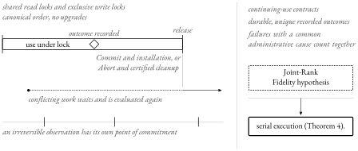
Figure 19. Locks are held until the outcome is installed. Shared read locks and exclusive write locks are acquired in canonical order without upgrades and held through Commit and installation, or Abort and certified cleanup. Conflicting work waits and is evaluated again. Theorem 4 states the assumptions.
A lock protects records that the machine itself holds. It cannot delay a court order or a revocation that takes effect outside, and no amount of replication can discover such a change from inputs that have not changed. A permission that is governed from outside therefore needs a continuing-use contract with its source, which fixes when an order takes legal effect, how current use is confirmed and how late notice is handled.
Three terms of the theorem are defined first. A local admission is one institution’s check and approval of its own part of a joint request, and it is sound when it admits only what that institution’s adopted rules and procedure permit. An aggregate requirement is a constraint over several records, like the limit on combined debt in Section 4. An affected-right requirement is the power that a relationship’s amendment selector names when an act changes the rights that the relationship represents.
Theorem 4 (Institutional composition). Assume complete adopted catalogues, sound local admissions, the derived locks, satisfied continuing-use contracts for permissions governed from outside, and durable, unique recorded outcomes from the decision services named in the joint requests. Then every finite committed history has a serial execution with the same admitted effects and the same observations for each operation. Each represented permission holds at its use under lock, and every represented aggregate requirement and affected-right requirement is covered.
Proof. Consider two conflicting operations and with distinct lock owners. The first keeps the relevant lock until its outcome is recorded and installed, and the second acquires the conflicting lock later. Writing for the time at which an operation’s outcome is recorded, we have
[ (T)<_T(x) <_U(x)(U). ]
Every conflict edge therefore increases , so the conflict graph has no cycle. Order the operations by and keep their authenticated inputs and actual times of use. Lemma 2 preserves the value of each expression, including each comparison that found a right unchanged. Proposition 3 then preserves the required powers and the local decisions.
The exact prepared changes and commands give the same effects. Irreversible observations that were admitted separately under one lock owner follow that owner’s authenticated order of transitions and keep their own points of commitment.
The uniqueness of the recorded outcome prevents inconsistent outcomes for a joint request. These facts establish the serial execution. ∎
Independent sets of changes commute when both orders preserve compatible inputs, times of use and current permissions. Progress needs preparation, decision, installation and cleanup that are fair and funded, and a deadline needs bounds on service beyond what the canonical order of locks provides.
A limit kept by reservation. The two loans of Section 4 illustrate the general rule that a record a check reads is protected. A limit that is a sum of non-negative uses under a fixed bound, kept by one keeper, can be kept more cheaply. The registrar that keeps the limit also keeps an account of how much of it is used, here 80. A loan that would raise a subsidiary’s debt by 15 reserves 15 with the registrar. The first loan takes the account to 95. The second asks for 15, finds 5 and is refused at once. Each loan then needs its own lender and the registrar and nobody else, and neither lender reads the other’s record. The reservation uses the escrow method [35].
Lemma (reservations). Let a constraint require that a sum of non-negative uses stay at most . Let the keeper admit an act that raises the sum by only if the committed sum, plus every outstanding reservation, plus is at most , and let it admit the act and record the reservation in one step. Let a reservation stay outstanding until its act commits or is abandoned, where an act is abandoned once it can no longer commit. Let an act that lowers the sum count for others only once it has committed, and let not be lowered below the committed sum plus the outstanding reservations. Then the constraint holds whichever of the pending acts commit, in any order.
Proof. After any subset of the pending acts commits, the committed sum is at most the earlier committed sum plus the outstanding reservations, which admission kept at most . Additions commute, so every order gives the same sum. ∎
The lemma covers sums of non-negative uses under a fixed bound, kept by one keeper.A limit kept by reservation rests on this lemma, Theorem 4 rests on the derived locks, and reads in general stay protected by those locks.
D.3. The replicated decision service
Theorem 4 concerns safety, which does not depend on timing. Whether a decision is always reached depends on the agreement protocol inside the decision service. The protocol chooses among candidates by a rank computed with a hash function, and the bound on its progress given below rests on one hypothesis about that function.
The supplement’s Appendix B uses asynchronous common subset among replicas with a static corrupt set of at most , where , and a quorum of distinct replicas [4]. The construction assumes private authenticated channels, eventual delivery and execution among honest replicas, durable state, binding hashes, unforgeable authentication and sound admission proofs. Failures that share an administrative cause count together.
For the purchase the service has seven replicas, two run by the registrar, two by the bank and three by parties independent of both. Since at most two of the seven may fail or lie, neither institution’s pair of replicas can change the outcome or keep it from being recorded. The bound is on replicas, whatever the cause of their failure. The failure of one institution takes its two. One operator that ran the machines of both institutions would control four of the seven, which is outside the bound.
For a large body of data, a custody certificate records acknowledgments from the required custodians after they have stored its complete bytes. Honest replicas retrieve and validate those bytes before deciding or signing, and custodians keep them through the period of reliance or until an acknowledged handover. This supplies availability under the stated conditions on custody and faults, and admission remains a separate check.
Each honest replica chooses the highest-ranked member of its candidate set under a fixed rule for ties. Write for that set in this subsection (it is distinct from the institutional state of Appendix B.1). The candidate sets contain a common core and lie within a cover , with
[ XX_iY,|X|q,|Y|n. ]
If the unique maximum-ranked member of belongs to , every honest replica chooses it. This event is sufficient for progress. Safety of agreement follows separately, from the intersection of quorums, witnesses of accepted prevotes and justifications of successors, under the assumptions on faults, authentication and durable state. When the event fails, a replica’s local candidate is not installed as the final result, and earlier handlers, participation in the successor view and final reliable agreement continue according to the protocol.
For independent uniform 512-bit ranks, the probability of a collision is at most . Conditional on distinct ranks, symmetry places the maximum in the common core with probability . With a concrete hash function the construction requires a hypothesis, Joint-Rank Fidelity. In its classical form it says that, after conditioning on any reached prior history and any admissible continuation by the adversary, the joint candidate sets, the adversary’s information and the ranks are indistinguishable, within advantage , from the same sets and information with fresh independent uniform ranks. The resulting conditional lower bound is
[ p_* = (1-)-. ]
If and the assumptions on ranks and service persist at every reached view, the probability that the sufficient event has not occurred in the first reached views is at most . The expected number of views, including participation in a successor view and final reliable agreement, is at most . Repeated conditioning gives these bounds without assuming independence between views. They are not bounds on elapsed time. Finite budgets of oracle queries or funding support bounded execution, and when a budget is exhausted the locks are kept under the rules for waiting and recovery.
The supplement’s Appendix B gives the complete construction and the classical and quantum formulations of Joint-Rank Fidelity. The quantum statement covers joint quantum side information. The ranks used in agreement are distinct from the ancestry ranks of this paper’s Appendix C.4 and from the ranks of remaining work in Appendix G.5.
What each party learns. An institution that is neither in an act’s scope nor running a replica of its decision service does no work for the act and learns nothing of it, so the cost of a local act does not rise as unrelated institutions join. The outside parties that run replicas of the decision service learn that an act exists, which institutions decide it, when, and how it ended. Its content stays hidden from them. The table says what each party sees.
| Party | What it learns | What it does not learn |
|---|---|---|
| An institution in scope | Its own part of the act, and the result of each private proof it verifies | The other institutions’ files |
| The proposer | The outcome | The other institutions’ files |
| An outside party running a replica of the decision service | That an act exists, which institutions decide it, when, and the outcome | Its content |
| A later receiver | The admitted result, and the proof for its stated purpose | Unrelated facts at the source |
| The operator of a machine | The records it operates | The records of other institutions |
A commitment hides a value only if it is made with fresh randomness, since a plain digest of a value with few possibilities can be guessed. A run of permitted yes-or-no answers can reveal what no single proof reveals. A proof hides what it is told to hide, and sizes, timing and traffic are outside it.
D.4. Local work and reuse
Agents propose continuously, and the reports and duties attached to each act have to be handled where the act is checked, at the rate of proposal and through repeated attempts at abuse. Whatever is local to one institution, or shared among a few, is handled there and nowhere else. Local work acquires no network-wide ordering cost merely because unrelated nodes join, and a shared dependency, a fresh private calculation or a required service still contributes its own work.
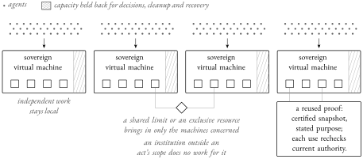
Figure 20. Local acts and shared dependencies. Independent work stays within one machine. A shared limit or an exclusive resource brings machines into a joint decision, and only the machines concerned. Capacity is held back for decisions, cleanup and recovery.
Before an expensive check, the machine reserves allowances for computation, proving, storage, disclosure and officials’ decisions. Persistent identities of work and of commands keep these entitlements on a retry. Reserved capacity protects final decisions, cleanup and recovery, including officials’ decisions and providers’ performance.
A proof that is to be reused is bound to a certified snapshot of the evidence and its revisions, to a purpose and to a range of objects. Each use checks current authority, the versions of what the proof depends on, whether reuse is permitted and whether the proof has been consumed. Recursive aggregation verifies compatible histories while keeping duties and the assumptions of every ancestor, within one admitted proof profile. Combining profiles needs the composition argument cited in Appendix G. An institution’s adopted procedure for applying its rules can serve many agents.
Appendix E. Recognition
This appendix supports Section 6.
Recognizing the registrar’s entry settles who owns the company and nothing more. Nothing obliges the destination to accept the entry, and if it does, it still has to authorize the import itself.
Recognition forms chains without becoming transitive. Institution B can recognize A’s register entry and issue a license on the strength of it, and C can recognize B’s license. Whether C relies on A’s entry is a separate decision by C. Being able to ask is likewise separate from being bound to accept. Every pair of machines on the network has a common interface for requests and proofs, which we call a corridor, and no agreement is needed for it to exist. Recognition is what a policy or a treaty adds, so the institutions that recognize one another’s results can be a proper subset of the institutions that exchange requests.
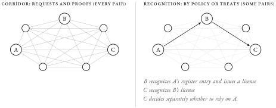
Figure 21. Recognition is each receiver’s decision. Every pair of machines has a corridor, and recognition runs along some corridors only. B recognizes A’s register entry and issues a license, which C recognizes separately.
No ledger gathers these decisions. Each one is an entry in the history of the institution that made it, kept with its purpose, its terms and the proofs that let it be shown to others. Carol’s purchase, accepted jointly by the registrar and the bank, is one entry. The destination’s later acceptance of her ownership for the import is another. For any act there is thus a definite set of institutions that have accepted it, and we call this state of the network partial consensus. Polycentric consensus makes the agreement complete among the institutions an act needs, selective recognition extends it to others one decision at a time, and a correction can withdraw it: when a source corrects a record and the correction reaches a receiver, that receiver examines again the reliance that depended on it.
E.1. The mapping, its proof and the record of reliance
Public authority is already divided in the way Section 6 describes. National, state and special-zone institutions each have their own regulator, court or register, and one recognizes another’s license, judgment or registration only so far as its own rules provide. A common interface can carry a request about trade, capital or a person’s qualifications, and the legal effect of the request is for the receiver to decide.
The movement of equipment in Section 6 is an act with a scope of its own: the company must release the equipment, the custodian that holds it must comply, and the destination jurisdiction must permit the import. The destination’s question about ownership is answered by the home registrar’s record that Carol holds the company, which we write as Holder(company-7, Carol).
A receiver recognizes a source’s result through a mapping (the recognition bridge of the supplement) from the source’s fields to the receiver’s meanings, adopted under a named instrument for a named purpose. A finite checker tests every admitted source record against the receiver’s dependencies. The receiver’s current policy must also permit the use: Holder(company-7, Carol) can be valid at home while a license at the receiver still needs a determination.
The private recognition proof binds the committed source act and its history, the mapping, the receiving policy, the purpose, the restrictions and the duties that remain. Supplement §H.3 proves that a successful check preserves the receiver’s schema for every declared source record. Private use also needs the proof and disclosure assumptions of Appendix C. Authenticity alone cannot map a category that the source learned to a category, an exclusion or a reserved decision at the receiver.
Every pair of authenticated nodes has a corridor for requests and proofs. Executing an act over it requires compatible typed profiles, the expected proof relations and current authority. Recognition is what a policy or a treaty adds, under its own conditions and its own rules for amendment. An autonomous institution remains subject to the jurisdiction and the instruments that constitute it, and a reform at a source may need corresponding recognition before it has its intended effect elsewhere.
An entry of partial consensus identifies the institution, the context, the purpose, the question and the rule. It binds the act or derived record, certified locally or jointly, together with its certificate, its proof history, the source evidence, the authority and the terms of reliance. Each institution keeps its own authoritative history, and recognition adds entries to the receiver’s history without reopening the original decision or enlarging the set of institutions that made it. A refusal preserves the source act and the receiving question for reassessment and records its basis, so that the institution can identify what further evidence or what change by an authority would support reassessment. Reliance that is suspended or refused leaves the current collection while earlier acts and duties stay recorded. A receiver’s stay on new dispatch leaves an old payment possible until the provider’s contract establishes that it is excluded.
An autonomous asset is an identified resource, such as the company’s equipment, recorded with the persons responsible for it and with the programs that govern its use. It is a representation on the machine. It is created by an act of the institution that constitutes it, and the physical equipment and the powers over it keep their own legal sources. Once the representation exists, the conditions for moving the equipment, the persons answerable for it and the interface through which a receiving jurisdiction is asked are all recorded with the asset.
Supplement §H.3 checks the preservation of the finite schema, §H.7 checks that work continued after recognition is equivalent with its retained history, and §H.15 checks that receiving decisions are indexed independently. Propagating corrections in general needs complete dependencies and delivered changes.
E.2. The strongest finding on which two sources agree
Suppose two registries review the same transfer, and the receiver’s policy asks for the strongest grounds for review that both findings affirm after they have been mapped to one schema. The concealed-controller example supplies two possible grounds, common control and proxy control. Order positive assertions by , so that a lower record asserts fewer grounds. Under this policy we construct a common lower bound. Where no such policy applies, partial consensus keeps the two findings separately.
Let flag a common controller and flag proxy control, and let a derived field record that some ground exists, . The records and both obey that rule. Taking the smaller value of each field gives , which breaks the rule, because it asserts that a ground exists and names none.
The correct summary is the meet, the greatest common lower bound. It takes the smaller value of each free field and recomputes the derived field. In general, let be a subset of a finite input lattice that contains the meet of every pair of its members, and let be a monotone map into the order of the derived fields. (This is a domain of inputs and has nothing to do with the legal power of Appendix D.) Put , ordered componentwise. Then
[ (x,F(x))_{S_F}(y,F(y))=(xy,F(xy)). ]
Monotonicity makes the right-hand side a lower bound. Every other lower bound has its free input below and therefore lies below the displayed record. In the example, recomputing gives .
This summary carries no common positive flag. Clearing the transfer remains a separate decision, and the sources’ findings and duties of review keep their status and stay recorded. A schema that required a positive flag would not contain the meet of every pair, and the construction would not apply to it. Issuing the summary is a separate act of the receiver, attributable to it.
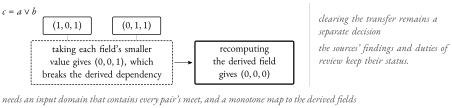
Figure 22. A common summary of two findings. With , the records and are both valid. Taking each field’s smaller value gives , which breaks the derived dependency. Recomputing the derived field gives . The construction requires an admissible input domain that contains every pair’s meet and a monotone map to the derived fields.
Appendix F. Accounts
This appendix supports Section 5.
Section 5 followed a price reduced by a court while the bank still held the command for 100. An account that tracked a single amount due could represent none of that.
F.1. Positions, resources and claims
Every position is tied to a person or an estate, which is a legally separate pool of assets and obligations, and also to an object, a unit, a beneficiary and a purpose. Carol’s escrow and the company’s bank account belong to different estates. Owning the shares gives Carol no title to the company’s cash, and in this example she is not liable for the company’s contractual debts and has given no guarantee. The company’s business is therefore accounted for on its own, and it supplies the numbers for the cases of this appendix.
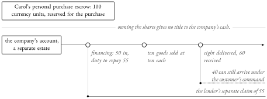
Figure 23. Whose money it is. Carol’s personal purchase escrow and the company’s account are separate estates. The company’s financing creates a duty of 55 currency units that has nothing to do with Carol’s escrow.
The company starts with 100 currency units in its own account. Financing brings in 50 and creates a duty to repay 55. The company spends 40 on inputs, produces ten goods and contracts to sell ten to a customer at ten currency units each. The customer issues a payment command for 100 for this sale, separate from Carol’s purchase of the shares. The company delivers eight and receives 60, and another 40 can still arrive under that command. Its cash is .
An economic program declares rights, duties, the resources it controls and the evidence that counts as performance. A position binds a person or an estate together with an object, a unit, a beneficiary and a purpose. Commands keep their possible effects, and unfinished work keeps the next actions that are permitted. Admitted identities and causal relationships allow performance under one program to discharge a duty of another or to satisfy its prerequisite.
Several quantities that are often run together are kept distinct: cash, a valuation, a range of values, permission to transfer, an executable quote, realizable liquidity and cash at a deadline. A blocked transfer can prevent a quote without preventing a valuation. A claim that pays 100 tomorrow can be worth 100 at a discount factor of one and still fund nothing that is due today. Supplement §§I.2 and I.4–I.5 work through financing, production and trade with these distinctions.
For an occurrence of an exclusive resource, allocations obey
[ j x{o,j}q_o, ]
where is the quantity allocated from occurrence to use and is the quantity available in the specified account. The constraint bounds total allocations by the available quantity, for divisible resources as well. Legal claims follow their admitted terms and can arise or be discharged without any creation or destruction of cash. Under admitted terms of guarantee and subrogation, one payment can discharge a creditor’s claim and the corresponding exposure under the guarantee while creating a claim of recourse, and it contributes cash only once. A set-off made with proper authority can extinguish debts without cash. Legal consequences need not conserve the sum of liabilities.
Within its authority to access the records, an institution can compute measures such as businesses formed, investment received and obligations met. These are outcomes derived from the record.
F.2. Identity findings and allocation
An identity finding binds its authority, its scope, the type of relation and a revision. SameEvent, SameIntent, SamePerson, SameEstate and SameCapacity are different relations. The identities of sources stay stable while these relations change. Separating orders that were previously merged keeps the old commands and creates no new right to execute. A correction keeps the records of disclosure and cannot recall information that was released.
A correction keeps what it corrects. Suppose two records each appear to show a payment of 100, and each has been applied to a different duty of 100. An authority with the power to decide such matters finds that they are records of one payment. There is now 100 of money against 200 of allocations. The machine keeps both source records and both allocations, records the shortfall, withdraws the completion that is no longer supported, and allows no new command on either duty until someone with authority allocates the 100. An allocation of 60 and 40 leaves 40 and 60 outstanding. Allocating 60 to the first duty permits a new command for 40 only with current authority, funding, and capacity beyond the commands that already exist. In another example, cash of 100 against possible debits of 150 leaves free cash of zero and a deficit of 50, and new spending waits for a response from an authority with the power to give one.
An award needs a different decision. In a separate correction of the goods sale, receipts of 60 and 40 at first support a payment of 100. A remedy sets the price at 40 and awards a refund of 60. An identity finding then establishes that there was one payment of 60, and an admitted allocation assigns 60 to the sixty-unit record and zero to the forty-unit record. These corrections change what the payments support, and they leave the refund award of 60 pending reassessment. A fresh decision by the authority over the remedy must reduce the refund to 20 before a new corrective command can issue. Existing commands keep their possible effects. The authority to correct identities cannot exercise the separate power over remedies (supplement §§I.39–I.40).
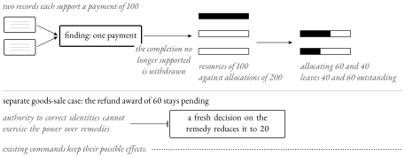
Figure 24. Correcting the identity of a payment. Correcting which payments support which duties leaves the separate refund award from the goods sale pending its own decision on the remedy.
F.3. Ordered decisions and Proposition 5
Proposition 5 states the guarantee for a decision that revises an earlier one. What is owed is recomputed from what has actually been paid, a report that is replayed adds nothing, a new command is limited to what outstanding commands do not cover, and nothing outside the ruling’s authority is touched.
Section 5 describes a ruling that changes what is owed while a command is still outstanding. The worked case here is the company’s sale of goods, under successive remedies, and it is separate from the duplicate-payment correction above. The customer has paid 60 of the price of 100, and the remaining 40 of the customer’s payment command can still arrive. A body with authority to grant remedies under the contract now reduces the accepted quantity from ten goods to four, so that four of the eight delivered are to be returned, reduces the price to 40 and awards a refund. The company sends a refund command. A second decision then lowers the price to 30 while part of that command is still unexecuted.
| Event | Paid | Refunded | Price | Refund due | Refund commands outstanding | New command allowed |
|---|---|---|---|---|---|---|
| First decision and dispatch | 60 | 0 | 40 | 20 | 20 | 0 |
| Partial refund | 60 | 8 | 40 | 12 | 12 | 0 |
| Second decision | 60 | 8 | 30 | 22 | 12 | 10 |
| Additional ten dispatched | 60 | 8 | 30 | 22 | 22 | 0 |
| Original forty arrives | 100 | 8 | 30 | 62 | 22 | 40 |
Two rules produce every row. The refund due is the amount paid, less the price, less what has already been refunded. A new refund command may be issued only for the part of the refund due that no outstanding command already covers. After the first decision the refund due is , and the company sends a command for all of it. In the second row 8 of that command has been paid out, which leaves 12 due and 12 outstanding. The second decision raises the refund due to while a command for 12 is still outstanding, so the company may send 10 and no more, and in the fourth row it does. In the last row the customer’s original payment command, which was issued before any dispute and which nobody recalled, pays its remaining 40. The customer has now paid 100 for goods priced at 30, the refund due rises to , and with commands for 22 outstanding a new command for 40 is allowed.
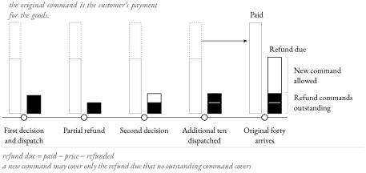
Figure 25. Later decisions while commands are outstanding. Amounts are currency units. The two columns on the right concern refunds. The original command is the customer’s payment for the goods.
Both decisions revise one consequence family, meaning the positions, duties and commands that descend from the original decision. The family continues after its original commands have finished. Each revision checks its predecessor, the current authority, the positions affected and the earlier performance, and then recomputes what is owed from the actual history of payments. Two reductions applied independently could each derive a full refund from the same payment.
For admitted compatible estates, unit and purpose, let , and denote the actual purchase payments, refunds and restitution, and let be the current price. Then
[]
Here is the arrears on the purchase, the remaining refund and the restitution due, which needs a mandate of its own. The identity
[ q-(P+T-R)=A+U-F ]
checks the reconciliation without authorizing any netting across unrelated estates, units, purposes or priorities. Commands remain indexed by performance leg, that is, by the flow they serve: the purchase payment, the refund or the restitution. If a quantity of refund is still possible under commands already issued, new dispatch is bounded by . This is the last column of the table above.
Restitution is its own flow. If a paid price of 100 fell to 40 and 60 was refunded, restoring the price needs a separately authorized restitution of 60, and partial refunds leave a current restitution and further contingent effects. Supplement §I.13 gives the ordered recurrence and the accounting of commands.
Proposition 5 (Ordered consequence accounting). In this adopted reconciliation profile, a decision revision derives the stated current positions from the admitted performance history. Receipt replay creates no additional performance, and a new command uses only the uncovered execution capacity. Revisions retain earlier commands’ possible effects and preserve positions outside the decision’s authorized scope.
Proof. The first decision creates the consequence family and binds its original duties and performance legs. A revision requires the current predecessor and recomputes the positions from the same cumulative histories of each leg. The positive-part identity gives the displayed reconciliation.
A record of performance changes exactly the leg it names, after checks of its source and allocation. Replaying the same record returns the existing entry, and a changed body under the same identity is refused.
Dispatch subtracts every command that is still possible on the same leg from the uncovered amount. A decision changes neither that set of commands nor the reservation of resources merely by changing the amount now due.
Exact checking of the affected objects leaves everything unrelated equal. Induction over the ordered decisions and admitted receipts proves the result. ∎
A stay can block new dispatch while old commands remain executable. The lender’s separate claim of 55 continues unless a decision with authority over it covers it.
F.4. Completing, closing and putting right
A mandate distinguishes funded performance from accepted commercial risk. A business that owes a supplier 50 may expect revenue of 100 with probability 0.9 and zero otherwise. After its initial funds are spent, a guaranteed payment needs another 50 in the adverse case. A mandate that bears risk names instead the bearer of the loss, the horizon, the default process and the interests that cannot be waived. Default keeps unpaid positions, and a release or an insolvency disposition made with proper authority can reduce them without inventing a payment.
Four properties of a plan are distinct. Authority safety constrains the effects that are admitted. Feasibility supplies one successful execution. Controllability supplies a policy that succeeds against every declared response. Performance needs, in addition, authority, funding, scheduling and capable providers. A replacement planner that proposes nothing can preserve safety while leaving a duty unserved, and Appendices G.5 and H govern the discretionary updates that affect completion. A binding revocation blocks the uses it affects even when no replacement route exists.
Persistent duties and deadlines keep earlier work through new admissions. For a failure event and prior information , justified bounds and imply, by the union bound, that the probability of failure over the lifetime is at most . A bound of one percent at each of one hundred steps adds up to one and so gives no useful guarantee in aggregate. The bound does not assert that failure occurs with probability one, and it uses no assumption of independence.
An obligation can be transferred without being paid. For a separate obligation of 100, suppose that the company has issued its own bank command for 100 against a reserved escrow. A trustee who consents can take the obligation, the escrow and the funded work of custody under a transfer made with proper authority and a release by the creditor. Closing the case keeps the original command. If 60 arrives later, the trustee continues to administer the remaining 40 under it. The resolution of the facts, the legal disposition, the closure of the case and the retirement of the operation therefore remain distinct.
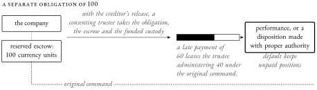
Figure 26. Performance, transfer and closure. The transfer requires the creditor’s release, the trustee’s acceptance, the reserved escrow and funded custody. The original command and the payment it can still make survive closure.
When something has to be put right, responsibility follows the act that needs correcting. An incomplete source fact goes back to the issuer with the power to state it. A rule that was encoded wrongly is compared with the governing provision and adopted again by the institution. An unauthorized update is investigated with the operator, and the affected use is suspended. A reserved decision follows its route of challenge and review, and a provider that did not perform still faces the original command and claim. Mass retains its operational compliance decision and bears liability for its own work under the applicable law and service terms. The bank remains responsible for its promised performance.
A correction alone creates no entitlement to compensation. A separate example in supplement §P.5 records an evidenced expense of three units, an order for reimbursement made with proper authority under a stipulated rule of liability, and its payment.
Appendix G. Learning
This appendix supports Section 8.
Section 8 began from the bank’s rule on knowing its customer. The source registrar has a question of the same kind, whether a transfer needs the consent of the minority shareholders, which at first went to its officers every time. The evidence for the world model is the institution’s own: rulings by officials, the results of investigations and the record of completed work [3, §2 and Appendix A.2]. Fraud is the first thing the model has to keep up with. A lesson about behavior or procedure can revise the procedure as acts are admitted and findings arrive, and a lesson that points at the rule goes as a proposal to the authority that makes the rule [3, §2 and Appendix A.2].
For the registrar’s consent question the learning can be stated in full. The source registrar’s rulings are sorted into three categories: ordinary transfers, transfers between parties under common control, and changes involving a nominee or a custodian. If category has rulings, of which required consent, the fitted weight is
[ _j=. ]
The adopted procedure requires no additional consent when the weight is at most , requires consent when it is at least , and in between refers the question to the officer. A category with no rulings has weight and is referred. With eight rulings in each category, of which none, seven and four required consent, the weights are , and . An ordinary transfer then needs no additional consent, a transfer between parties under common control needs consent, and a nominee change goes to the officer. Carol’s purchase falls in the common-control category, where this table requires the consent.
Figure 27. A learned rule. Weights of 1/10, 4/5 and 1/2 give no additional consent, consent required and referral to an official.
This table is the world model at its smallest, and it is the simplest learner for which the fit can be proved, which the sharing described below requires.
G.1. Reports, permissions and release
What the machine may learn from is limited as well. A report that the law requires, such as notice to the corporate supervisor of a change of controller, goes to the supervisor for oversight, and the duty to report gives no one a right to train a model on the reported facts. Learning needs permission from whoever holds the rights: the company, the buyer and the seller, and their customers, employees, counterparties and providers, each for what is theirs [3, Appendices B.1 and C.1]. Rights holders can decline, and the transaction and the required report then proceed exactly as before.
An admitted act keeps its rule and the exact procedure that admitted it, so a pattern confirmed later can be grouped with the decisions that let it through. Such an association can identify a procedure to investigate. A causal claim needs the further evidence and assumptions of Appendix J. A rich institutional record supports analysis across activities, and broad human access to it could expose private affairs or enable misuse. The machine may therefore compute on authorized inputs while routine decisions, reserved decisions and released outputs each follow their own scope.
The design names where such evidence can come from. An institution can run a check over the requests it has already recorded. It can give a share of requests, chosen by lot, a second check as well as the usual one. It can introduce a change of procedure across offices in an order chosen by lot. And it can review a random share of what it let through and of what it turned away. Each shows something different, and the companion paper says what each shows [3].
A required report may be an aggregate, and a permitted study may identify cases. Each use needs its own authority, whatever the format. The example is a rule that obliges a company to report a change of controller to the corporate supervisor: the controller, the shareholding and the effective date, by the next business day. The machine files the report for the company and follows it as it follows a payment. The supervisor may use the reported facts for oversight, and the duty to report gives no one a right to train on those facts or to pass them on. In this controller-change example the company authorizes its operator to file through the supervisor’s designated interface. Other reporting rules can make a transaction, a score, a hold, a refusal or a later finding the trigger. The execution contract binds the requirement, the filer and the access route. It distinguishes the filing instruction, submission, acknowledgment, acceptance and performance, and the terms of the duty determine which response establishes completion. Retries keep the identity of the filing, the earlier responses and the outstanding performance.
Everything beyond the required report is optional. Optional learning requires lawful access and authority for each use. A company’s agreement covers only the rights that it can grant, and the rights of customers, employees, counterparties and providers also apply. Three permissions define the evidence and the learning that are permitted, each for a stated use: what may be observed, who may hold it and what they may learn from it, and what may be released to whom [3, Appendices B.1, B.2 and C.1].
| Permission | Required scope |
|---|---|
| Observation | Proposal, capacity, objects, operative procedure, intervention, available outcome, horizon, missing information and coverage gaps. |
| Access | Source basis, covered records, learning task, authorized custodian and collection/use rights. |
| Release | Outputs, recipients, purposes, retention, onward use, correction and complete observable disclosure. |
A voluntary finding can inform a public recipient’s specified supervisory purpose without becoming a required report or opening all the source files. Learning can test methods of fraud, the evidence or consents that are necessary, and procedures for completing legitimate work. A receiver’s evaluation must include errors, missing outcomes, mistaken holds, delay, costs and the burden of investigation. A hold on the share transfer, for example, records an intervention. To call it a supported near miss, the institution needs evidence that the held path would otherwise have produced a prohibited transfer of control, and if an earlier command can still produce that effect, the new hold alone establishes no prevention. An estimate of harm avoided needs a counterfactual baseline as well.
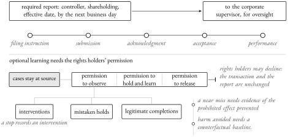
Figure 28. A required report and optional learning. The reporting rule sends prescribed facts to the supervisor for oversight. Optional learning needs the rights holders’ permission, and declining it leaves the transaction and the report unchanged. Interventions, mistaken holds and legitimate completions are counted separately.
Supplement §P.4 gives a complete periodic report under a stipulated reporting rule. Ten distinct first-submitted proposals yield six admissions, two waits and two refusals for want of authority. For one refused request, omitting only the check of current authority would admit its unauthorized write in the finite state, and the complete checker prevents that write. The report binds this evidence, its period and denominator, the legitimate work still pending, the permitted fields and the sequence of corrections to a named supervisory purpose. It adds the prevented attempts and the basis of the control to the record of completed acts. The supervisor can request a review of the control without gaining access to unrelated case files. The report estimates no financial loss and enables no optional learning or publication.
An assessment of disclosure covers weights, metadata, refusals, timing, visible actions, earlier releases and what the recipient already knows, including filings. Local storage and aggregation also need rights of use and an assessment of disclosure.
The controller-change example runs as follows. Assume that the law permits local fitting and use by a specified receiving jurisdiction. The source’s appointed custodian holds requests, checks of credentials, agents’ actions, interventions and outcomes, with decisions by officials, refusals and unknown outcomes kept distinct. The company, the buyer, the seller and other rights holders authorize learning about patterns of concealed control and about mistaken holds from information they control, and the providers’ terms and applicable restrictions also bind the use. Under the access permission the source fits a procedure for checks of control and consent. The release permits its table, the declared categories, the cutoff and the proof of calculation to reach the receiving node, and the cases and private credentials stay with the custodian. The receiver checks the proof, maps the categories, tests locally and adopts the exact procedure under its prior mandate.
A separate release could permit a public research unit to study the released model, and operational use would need release terms and receiving authority of its own. The machine binds every filing and release to its use, recipient, authority and allowance for disclosure. If learning establishes a trigger for reporting, the reporting rule supplies the recipient, the route, the deadline and the restrictions on investigative disclosure. A later correction identifies the source, the revision, the effective time and the affected uses, and the receiver validates the covered reliance again after delivery. The reporting rule separately governs corrections to filed facts. Earlier disclosures, submissions, completed acts and executable commands stay recorded.
G.2. The mandate and what a fit establishes
When new rulings arrive, the weights move, and the outcome for the next case moves with them. That is a change of procedure, and a change of procedure needs authority like any other change. The institution gives that authority in advance, in the limits that Section 8 described. A standing mandate authorizes a procedure for updating. It fixes what the updates aim at, what counts as evidence, what consequences an update may have, which decisions stay with officials, and how much delay, cost and disclosure the updates may add in total. An update inside the mandate takes effect once the machine has checked the whole new procedure against it, and an update outside it needs a fresh act of authority. Amendments to the law, and every decision the law reserves to an official, stay where they were, however capable the learner becomes. A score from a fraud model, for instance, can justify holding a transaction for investigation, and it is no finding that fraud occurred.
The counts and are taken over the eligible rulings in category . A low weight satisfies the consent requirement, and the purchase still needs everything else: consent must cover the exact case, and authority, holder, eligibility, other officials’ answers and resources still govern the purchase.
The standing mandate fixes the objectives, the labels that count as evidence, the consequences an update may have, the decisions that stay reserved to officials, and cumulative limits on the delay, cost and disclosure that updates may impose. The machine checks the whole of a new procedure against it, because a changed threshold or a changed definition of a feature alters outcomes with the weights untouched. How much delay to honest business is worth how much fraud prevented is a choice for the institution: a model can estimate what each option would do, and choosing among the options is the institution’s act.
The world model learns at three connected levels: how the supplied law applies to cases, how an adopted procedure performs, and how people and services behave under it. It preserves the control, capacity, objects and time that its questions need [3, Appendices A.2 and B.2]. Rulings on consent concern the interpretation of law, and a fraud estimate can justify an authorized investigation without becoming an adjudicated finding. Missing outcomes and reserved decisions stay explicit. A stronger learner changes the calculation and the assurance that is required, and it gains no power to amend the law. An answer recorded on a referred question can become an eligible observation for a later fit only under the applicable permissions. The adopted thresholds determine how the fit affects later responses, and questions reserved by law remain reserved. The fit uses the categories and rulings it is given. It uses the rulings as labels, and learning from the reasons that accompany them uses a representation, a computation and evidence of its own [3].
G.3. Proof of fitting and of current use
A pattern of fraud seen in one jurisdiction is soon tried in another, and a registrar that hears of it early is spared the cost of rediscovering it. The cases behind the pattern are private, so the source shares the lesson together with a proof. In the consent example, the source registrar signs an inventory of its rulings, with one row for each case and with the category and the ruling hidden inside commitments. It releases the table of weights and a zero-knowledge proof that the table was computed by the formula above from every row of the inventory that its declared terms make eligible. The rulings and the case files stay with the source.
The proof establishes the calculation. That the source’s cases were truthfully and completely recorded, and that the source had the power to rule on them, are the source’s obligations. The design makes the receiver answer whether the source’s categories mean at the receiver what they meant at the source and whether the lesson holds for the receiver’s population. Verifying the proof therefore produces a candidate that has no effect. The receiver establishes that the source’s categories correspond to its own, tests the candidate on its own cases, counting mistaken holds and delays as well as detections, and only then adopts it under its own standing mandate.
A lesson can reach a receiver before the receiver’s own first finding. The limit the receiver puts on such a lesson can be given a form before anything is held. The receiver can estimate the daily cost from its own recent requests. It can investigate and hold none. Or its mandate can allow holds for a fixed number of days under a ceiling fixed in advance.
Importing a model requires correspondence of the source’s and the receiver’s categories, labels, identities, units and windows of observation. The receiver must also validate performance on its population and recognize the consequences that are permitted. Information from a source can make a receiver’s decisions worse, an effect known as negative transfer [32], and the receiver’s test on its own cases is what catches it. An agreement for a continuing exchange can specify recipients and purposes so that a receiver can evaluate a result before rediscovering it locally, and availability, rights, compatible meanings, validation, capacity and adoption still govern use.
Adoption checks the current sources, the correspondence, the scope, the uses, the validation, the predecessor authority, the cumulative limits and the inherited work, and then installs the procedure atomically. Recognizing a finding, receiving a warning, importing parameters and adopting a general model are four distinct acts. For the receiving registrar, verifying the source’s consent calculation does not change the rule used on the next transfer until the registrar has established the receiving meanings, evidence, permitted consequence and authority and has installed that exact procedure through its own adoption.
The finite consent construction uses separate proofs for training and for inference. The source signs an indexed inventory (a manifest) for a declared collection and cutoff, and training consumes every eligible row and establishes the fit. The receiver’s protected policy supplies the trusted key and the permitted scope, and protected state about the source fixes the expected inventory. Completeness beyond that inventory, the truth of the cases, a faithful encoding and the power to rule are obligations of the source.
The committed collection. Supplement §O.2 defines the signed indexed inventory, eligibility under observation and censoring, and six independently blinded Pedersen commitments for each row. A labeled row selects one category and ruling, and an unlabeled row contains zeros. Every eligible row enters the fit defined at the opening of this appendix. Write each published weight as in canonical reduced form. The finite profile permits rows and canonical reduced weights with .
Assumptions of the proof. Supplement §O.3, Theorem O1, gives the derived range commitments, the gadgets for Boolean values and zero residuals, the entries before padding, and the integer bounds that exclude modular wraparound. It assumes adaptive knowledge soundness, independent uniform blindings, strict authenticity of signatures, collision-resistant hashing and an injective common encoding. It also assumes Pedersen binding for generators with no known discrete-logarithm relation. The claim of privacy separately assumes zero knowledge for the complete public statement, with the specified randomness, and excludes information obtained outside the declared protocol.
Current use. An inference binds the current credential, the subject, the revision of the case, the cutoff, the digest of the request and the complete operation to the adopted outcome. Authenticated intake establishes which credential is current, the machine checks the operation against its protected expectation, and the source of the case, which has the power to classify it, extracts the category. Supplement §O.4, Proposition O2, proves inference for the current case as a one-hot selection with ten range entries padded to sixteen, bound to the adopted model and the exact current operation. Supplement §§O.5–O.6 cover fresh blindings, chains of corrections and current use, and they preserve the ancestry requirements of G.4.
What the public outputs reveal. Public outputs can reveal the content of the private inputs. With one eligible row, weights of or in its category and elsewhere reveal the category and the ruling. If the three categories map to distinct public consequences, one observed outcome of inference identifies the selected private category.
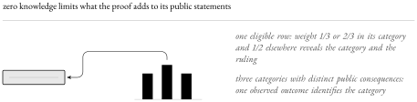
Figure 29. Public statements in private proofs. Zero knowledge limits what the proof discloses beyond its public statements.
Relay and adaptation. A releases a procedure and a proof bound to B. B may relay them only as permitted, and that proof cannot authorize C. A can issue a newly authorized proof bound to C, for which A keeps the private inputs. Alternatively B adds local rulings and proves the calculation of the adaptation and its dependence on A’s evidence and its own additions, and C still needs a new release bound to it, with validation and adoption. An admitted recursive profile can carry earlier certificates. Combining profiles requires a composition argument that keeps every ancestral assumption, cost of disclosure and accumulated loss of security (supplement §J.27). The proofs of fit and inference cover declared finite profiles. A relay repeats the same evidence.
G.4. Corrections, reconciliation and renewal
Rulings are reversed on appeal, and investigations find that an earlier finding was mistaken. A lesson built on them then has to change everywhere it went.
Suppose that Carol’s transfer, one between parties under common control, was held while the table above was in force, because the table required a consent that the parties did not have. Now six of the seven rulings that required consent in the common-control category are reversed. One of eight requires consent, and the weight falls from to .
The correction is sent to every receiver of the old table. From the moment a receiver admits it, the receiver’s machine refuses any use that depends on the old table, even though no replacement exists yet, and the refusal extends to every result that was derived from the table [3, §7]. The source fits and proves a new table, each receiver verifies and adopts it, and each affected case is then examined again. Carol’s transfer now needs no additional consent and can be registered. The time already spent on hold, the costs incurred and the disclosures made stay on the record.
Corrections follow dependencies through models, adapters, calibration, adopted procedures and the results of checks [3, §7 and Appendix F.1], and admitted delivery of a correction marks the affected reliance before another effect can occur. Each correction names the prior row and its replacement. Consecutive inventories preserve unchanged rows and justify every change, and a withdrawal keeps an identified row without a label. Row commitments hide the bits for category and ruling with random values called blindings. Fresh independent blindings prevent a corrected commitment from exposing a changed bit through reused randomness. Changes in weights and metadata stay observable. An admitted revision of a case’s credential blocks old inference in the same way that a correction of the source blocks the old fit.
After a replacement has been adopted, explicit reconciliation of each case establishes the basis for further use. Adoption and reconciliation both keep the clocks of holds, expenditure, disclosures, completed acts, reserves and original commands. From the point at which a correction takes admitted effect, the machine rejects affected use at its boundary; the supplement calls this fencing. Acts completed and commands issued while the old table was in force stay on the record, and undoing any of them takes a remedy from an authority with the power to grant one. Candidates that are not in force and later derivations keep their checks of ancestry, so renaming or caching cannot bypass an unreconciled source, and a replacement identifies its historical predecessor without claiming to depend on invalidated evidence.
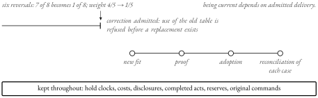
Figure 30. A correction reaches every use. Use of the old model is refused from the moment the correction is admitted. A new fit is proved and adopted and each affected case is reconciled, while the time, cost and disclosures already incurred stay on the record.
Changes to access or release have their own authority, effective scope and terms for training, delivery, retention and use, and retraining or reversal needs applicable terms. Whether a machine is current depends on admitted delivery, and a stronger guarantee needs a lease from the source, a serialized service for current use or a bounded contract for notification.
Each update of the procedure charges the finite allowance of the mandate and keeps its baseline, cumulative burdens and expenditure of privacy, the status of sources, clocks and duties. Renewal needs authority in the predecessor context currently in force and keeps lifetime expenditure, disclosures, clocks and duties. A separate, persistent allowance for unfinished work is charged at each adoption and is left unchanged by ordinary service and by renewal of the mandate. Without it, renewal could postpone a duty for ever. Safety on every finite prefix does not by itself prove completion.
G.5. Completing duties through updates
The learned procedure is replaced at every update, and an update can cut off a duty: if a refund is owed and paying it needs a transfer that a stricter fraud model would block, the stricter model leaves the refund with no means of being paid. Proposition 6a gives the condition under which each duty is completed within a bounded number of steps however often the procedure changes.
Before the machine adopts an update, it checks that every duty in progress can still be completed under the new procedure, whatever the other parties do within their declared responses. The construction below makes that check exact. Fix a procedure with admitted actions in state . Let contain the states that satisfy the adopted safety conditions and the states that record the stipulated performance of the original duty. The finite specification of responses includes complete paths and the possible effects of old commands. In the formula below contains endpoints, and every intermediate state must also remain in . Define
[ W_0=, W_{n+1}=( {s:aA_B(s), (s,a)W_n}). ]
The least fixed point is the set of states from which some strategy reaches the goal against every declared response, and the index at which a state first enters decreases along that strategy. Requiring the successors to be nonempty excludes actions with no specified response. A further check or instruction does not satisfy the goal of performance.
Removing the only route to a refund can give but . Discretionary adoption of then requires a change to the promise by an authority with the power to make it, with unpaid positions and possible commands kept. An update that removes the only route to a refund therefore cannot be adopted as a matter of discretion.
Even this is not enough, because two acceptable procedures can undo each other’s work. Let procedure lead from state through to the goal , and let lead from through to . Switching procedures after each first step moves between and without end. What rules this out is a measure of remaining work that every procedure respects, which is why Proposition 6a asks for a common rank.
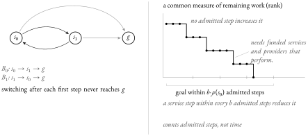
Figure 31. Progress through changes of model. Two procedures that each reach the goal can alternate without reaching it. A common measure of remaining work bounds the number of admitted steps to the goal.
Call a transition that performs part of the duty a service step, and let a rank be a natural number assigned to each state as a common measure of remaining work.
Proposition 6a (Progress through model changes). Fix a safe region and a natural rank , with rank zero implying the original goal. Suppose all admitted non-service transitions preserve the region and do not increase rank.
Each completed service step preserves the safe region and decreases positive rank under every declared response. If such a step completes within every admitted transitions while rank is positive, the goal is reached within admitted transitions.
Proof. Each block of at most admitted transitions decreases a positive rank by at least one. The rank is a natural number and no intervening update increases it. After at most such blocks it is zero, which implies the fixed goal. ∎
The bound counts admitted transitions and takes no account of time or of external events that are not counted. The machine checks complete rank-decreasing strategies. A separate finite construction in supplement §N.6 combines the rank of service with the persistent allowance for updates to bound the steps of use and adoption. Both need funded services and actual performance by providers. A binding revocation blocks the new uses it affects independently of discretionary adoption, and if it removes a necessary route, the assurance fails while the duty and the possible external effects remain.
Appendix H. Extension, retention and succession
This appendix supports Section 5.
H.1. Extensions and Theorem 6
A new kind of entity or operation is added to the machine only by a checked change, authorized under the rules as they stood before it, which keeps the effects of existing operations and of commands already issued (Theorem 6).
A new entity needs founding authority, a fresh identity and a valid initialization. A new form of entity also defines powers, operations, effects, rights and the interfaces through which receivers deal with it.
Project the institutional state of Appendix B.1 to an operation context and the protected coordinates that are read and written, with a valid adapter to the machine. An extension proposes
[ (,s) (E,s’). ]
Its certificate binds the predecessor, the complete specification of the successor, the initialization and the actual state. The powers of the predecessor must authorize the adoption and the initial effects at the time of use. External premises identify the institutions or services responsible for them. The checking rules stay fixed. The predecessor identifies the context in which adoption is authorized, the specification of the successor fixes the new operations and their meanings, the initialization supplies a valid starting configuration, and the binding to the state identifies the records actually being changed. A certificate for different initial records or for a different successor cannot authorize this extension. New primitives require correspondence with the actual machine or provider.
The finite checker enumerates the operations that are retained, replaced and new, together with the responses of the environment. Retention preserves old effects and observations. Replacement or retirement needs authority for the differences and a treatment of live work. Every transition keeps the effects of old commands or proves that they are excluded with external effect, and this includes changes to guards. Compatibility preserves the effects, observations and enabledness of retained operations.
One service may promise to perform only after another has performed, while the second makes the reciprocal promise. The circular implications and need an established guarantee, an accepted environmental premise or a jointly checked invariant with valid initialization. Services that wait on each other also need a condition for progress.
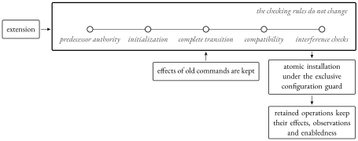
Figure 32. Adding a new kind of operation. Extensions inherit the outcomes of old commands and the retained operations, under checking rules that do not change.
Theorem 6 (Admitted semantic extension). Let the initial configuration satisfy and its installed transition family pass the finite checker. Suppose every executed step corresponds to a member of the current checked family; each extension passes predecessor authority, initialization, complete transition, compatibility and interference checks; and adoption revalidates and atomically installs its context and state under the exclusive configuration guard.
Under the bound environmental premises, every finite execution through admitted extensions satisfies at its current context.
Proof. The finite checker evaluates every state and tuple of parameters in the declared domain. On states that satisfy the invariant it checks each admitted successor and every enabled outcome bound by the environmental contracts, including the responses of old commands. Omitting a row or a bound outcome fails this check. The completeness of those contracts with respect to the actual environment remains a premise.
The compatibility checks establish the old relation of observation and effect for each retained operation, and authorized differences supply the separate relation for replacements.
Induct on the length of the execution. An ordinary transition or a transition of the environment preserves the current invariant by its checked row.
Adoption uses authority from the predecessor context, establishes the invariant of the successor by initialization and installs the checked transition family. Its new powers have a finite derivation through that authorized act.
These cases cover each next step and preserve the invariant indexed by context. The unchanged checking rules prevent a proposed extension from admitting itself by replacing the proof rules. ∎
In the ownership profile, an extension requires for the service balance . The old act changes from 100 to 93 and leaves unchanged. Its admitted replacement preserves the effect on ownership and changes both. Replay keeps the seven units consumed. Exclusive atomic adoption invalidates old joint requests while keeping the commands that were issued.
H.2. Retention and Proposition 7
A handover or migration starts from a complete snapshot (the custody cut of the supplement), which fixes positions, sources, the history of identity findings and decisions, consumption, commands, disclosures and unfinished work. A migration under the same contract must preserve future operations and observations in both directions, and authorized differences need a disposition of their own.
Old records are not all kept. The institution decides in advance which questions it must still be able to answer, such as who authorized a transfer ten years ago, and keeps enough to answer them, since two histories that leave the same retained record cannot be told apart afterwards (Proposition 7).
The inquiry of Appendix B.1, which asks who authorized a change of name, depends on this retained evidence. To determine who authorized a transaction ten years earlier, a successor needs the distinctions relevant to that question and a usable procedure for recovering the answer.
Let be what is retained of a history , and let be the family of questions that the institution has promised to be able to answer. A decoder answers a question from the retained representation alone. Exact answers exist precisely when
[ (H)=(H’) q(H)=q(H’)qQ. ]
Proposition 7 (Retained verification capability). The displayed condition is necessary and sufficient for each question in to factor through on its image.
Proof. Equal inputs to a decoder must produce equal answers, which proves necessity. Conversely, assign to each retained representation the answer common to all the histories that are retained as it. The condition makes that assignment well defined for every question. ∎
The finite checker also requires that a decoder be available. If distinguishes all histories, retention must be injective. Reconstruction requires retained information beyond a commitment to deleted data, and plaintext backups count as retained information. An erasure made with proper authority can retire a question and require the answer “evidence unavailable”.
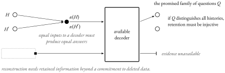
Figure 33. Retained evidence and future questions. The available decoder answers only the questions that the retained representation preserves.
H.3. Operators, devices and retained statements
A new agent can get nothing admitted that its predecessor could not. What holds for the agent holds for the company when it changes its owner or its agents: its duties belong to the company, and neither change discharges any of them. The figure draws the handover to a new operator.
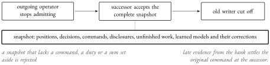
Figure 34. Handing over to a new operator. The outgoing operator stops, the successor accepts a complete snapshot, and only then is the old writer cut off.
The successor checks the snapshot against three things the outgoing operator does not control: the institution’s own signing component, which outlasts a change of operator and holds the last state it signed; the institution’s own complete copy of its journal, kept by custodians who are not its operator; and each provider’s own list of the commands it has accepted from the institution. It rejects a snapshot that lacks a command, a duty or a sum set aside that any of these holds.
A lost device is replaced under a recovery arrangement that Carol set up in advance, and her earlier permissions and disclosures carry over.
An institution’s ability to replace its operator depends on transferring usable records and rights to services, including the duties that the new operator will administer. In the handover of Section 5, the learned state includes the models, the procedures for verifying and applying them, the revisions of sources and cases, the corrections and the mandates, with lawful access to evidence and rights to services. Late evidence from a provider resolves the original commands, and pending cases and corrections move with the snapshot. Like a revision of the model, a change of operator keeps mandates, allowances already consumed, cumulative burdens, corrections, duties and commands. It creates no fresh right to execute: the successor can carry out the commands and duties that it received and nothing that its predecessor could not.
Succession of a device transfers control of a holder’s credentials while keeping earlier permissions, uses and disclosures, subject to revocation and checks of current authority. The holder’s device keeps a root secret, the private value used to prove control over credentials. The control record binds a stable lineage, the generation of control, commitments to the secret and the signing key, the recovery policy and the status. Credentials bind the lineage and the commitment to the secret to attributes authenticated by the issuer. A presentation proves authentication, possession, the stated conditions, current control and exact consent while the root secret stays on the holder’s device.
Consent covers separately the use of a credential, the disclosure of a condition, raw export and institutional action, each with a recipient, a purpose, an expiry and terms of reuse. The control service orders each Allow or Deny against current control and prior use, and its proof binds the command, the mode of output and the recipient. Public conclusions and openings keep their restrictions on release.
The recovery profile in Appendix C of the supplement uses three of five guardians, whom the holder appointed in advance, to authenticate the successor’s control and to reconstruct a fresh backup key. If Carol loses the device that holds her credentials, three of her five guardians authorize a successor device. An atomic change of generation cuts off the old control while keeping spent entitlements, reservations and disclosures. A suspected compromise of the root secret requires replacement of the credential, authorized by the issuer.
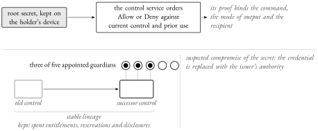
Figure 35. Recovery of a holder’s control. Three of five appointed guardians authorize successor control under the recovery policy. The change of generation cuts off the old control while preserving lineage, spent entitlements, reservations and disclosures.
A retained bank statement binds its issuer, account, currency, time of observation, the transactions covered and the last reconciliation. If it records 100 units at its snapshot, with 40 later performed and 60 still possible under the original command, the successor keeps both the performance and the exposure. An unavailable bank, or later activity that was not observed, prevents that record from establishing a balance that can be spent now. Verifying retained evidence and gaining access to funds require different services.
H.4. Theorem 8 and Corollary 8a
Each earlier result covers one kind of step: running a program (Theorem 1), a joint decision (Theorem 4), a revision of the accounts (Proposition 5), an update to the learned procedure (Proposition 6a), an extension (Theorem 6) and retention (Proposition 7). Theorem 8 puts them in one statement.
Theorem 8 states that any sequence of admitted steps keeps what the machine holds in agreement with what the institution has decided, done and still owes, whether the steps are acts, joint decisions, corrections, updates to the learned procedure, extensions or handovers. It assumes that every route to the records passes through the check, that each step of the implementation and each connection to an outside system does what its specification says, that the stated assumptions about the outside world hold, that the inputs the machine protects are current, and that each new state is installed whole. Throughout, every outstanding command keeps its possible effects until its provider’s evidence or an authorized ruling settles it. Corollary 8a follows: replacing the agent leaves all of this intact, because every proposal from any agent meets the same check. This is the exact form of the claim in Section 2 that a person and a model sending the same request get the same answer.
The statement concerns a relation between the machine’s implementation state and the institution’s position, which we call the institutional relation. It pairs the implementation’s state with the context, the procedure in force, its exact inference, the institution’s own effects, economic identities and accounts, retained evidence and live work. The theorem is stated for one machine under a declared profile, which fixes the encodings, semantics, checks and assumptions against which its runs are judged. A step soundly refines its specification when everything the implementation does is permitted by the specification. The environmental premises are the assumptions about outside systems and parties that the profile states. Each new state is installed in one indivisible step together with its receipt, the durable record of that step.
Theorem 8 (Continuing execution). For the declared local profile, assume complete mediation; that each step, and each adapter to an outside system, soundly refines what it implements; that the environmental premises bound by the profile are satisfied; that protected inputs are current; and that each state is installed atomically with its receipt. Then, starting from related states, every finite admitted trace preserves the institutional relation and the invariants of the current context. Each relevant unresolved command retains its possible effects or an admitted disposition supported by its provider contract, and current receiving decisions remain indexed by their own institutions.
The last clause says that each institution’s decisions to rely on the results of others stay recorded as that institution’s own, as in Section 6.
Corollary 8a (Agent substitution). Fix the adopted execution relation and its authority and environmental premises. Under Theorem 8’s complete-mediation and soundness assumptions, replacing the proposing agent leaves every admitted trace within that relation. The replacement may propose a different set of permitted actions.
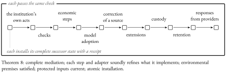
Figure 36. One invariant through every kind of change. Programs, joint decisions, revisions of accounts, model updates, extensions, retention and handovers are all steps that pass the same check and are installed whole, each with a receipt.
Changes to internal storage preserve the relation, and visible steps match admitted institutional effects and observations. The earlier results provide the cases of the induction: execution of a source program and its import, joint admission, economic revision, learning, extension and custody. The combined statement keeps the assumptions of each case.
Proof of Theorem 8. Induct on the committed trace. The checks of source-to-effect correspondence and of the funding adapter establish the case of the institution’s own act, including the exact change to the register, the reservation of cash, the consumption of service and the pending command.
Steps that perform a check compute the specified inference and keep their inputs, outcomes, costs, disclosures and records of suspended questions. Use validates again the complete current dependencies.
Economic steps use the rules for exclusive accounts. A correction of identity records the changed support, any deficit and the pending reassessment of consequences, and ordered decisions made with proper authority use Proposition 5.
Adoption of a model checks the power of the predecessor, the actual procedure and the current basis of its derivation, the cumulative state of the mandate and the declared unfinished work, and it installs those records atomically. Generating a candidate leaves the authority in force unchanged.
A correction of a source marks the current reliance that depends on it and prevents later derivation or adoption from bypassing an unreconciled ancestor. A binding invalidation cuts off the affected uses while keeping failed assurances and live positions.
Historical consumption and the possibilities of external commands remain throughout these cases. The additional conclusion about progress requires the service assumptions of Proposition 6a.
Other extensions use Theorem 6 and their exact projection of the state. Custody preserves the accepted snapshot and its promised paths of authority, then cuts off the old writer.
A transition of retention uses Proposition 7 with the available bound decoder for its declared questions. Responses from providers update the original command after checks of source, beneficiary, unit and quantity.
Every case installs its complete successor with its receipt in one local durable transition. Thus the relation holds at the next committed state.
Operations across institutions use Theorem 4 for their shared dependencies, and receiving recognition and adoption of a model remain separate local transitions. ∎
Proof of Corollary 8a. Every proposed change to the protected records reaches the same current checks of admission and installation. By Theorem 8, each accepted change preserves the institutional relation whichever proposer supplied it. Induction gives the claim for traces. The argument places no obligation on a proposer to submit a useful permitted action. ∎
A coordinator may assign bounded work to replaceable agents on the basis of permitted observations, and Theorem 8 applies at the check independently of that proposing process. Supplement §K.3, Theorem S1, states the corresponding property of traces for its authorized system.
Appendix I. Participation
This appendix supports Section 7.
A network worth joining only once others have joined gives nobody a reason to go first, which is known as the bootstrap problem. The design answers it for an institution that is alone. A programmable legal entity, an autonomous business and an autonomous asset (Appendices B and E) all exist at one institution before any other has joined.
I.1. Local use and formation
Public jurisdictions, private registries and contractual institutions can all take part, each within the powers it actually has. The design takes each institution’s law and powers as it finds them, across national, state and special-zone institutions and across forms of government. A jurisdiction can also form new institutions and entities on the network under its own law, where a constituting act gives a programmable legal entity its founding powers, its agents’ mandates and its resource accounts.
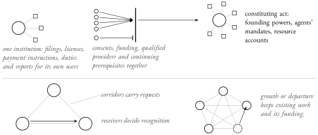
Figure 37. One institution first, then more. An institution forms and operates locally before any other joins. Wider recognition comes later and separately. Growth or departure keeps existing work and its funding.
The handoffs between an institution’s own desks, and the repeated preparation of the same documents, are a fixed cost that a business pays before it begins to operate, and the machine removes the part of that cost which the institution controls. Waits for an outside provider, for a decision reserved to an official or for another institution remain governed by their service arrangements. An institution’s obligations include any terms of accession and recognition that it has validly undertaken, and geography or a territorial label alone supplies no power. Once an institution has joined, common terms can reduce the separate instruments of recognition it needs, and continuing services and shared learning supply reasons to remain.
A first member needs no network to learn from its own record. It can run a check over its past requests, review a random share of what it admitted, and have officials decide a share of delegated answers without seeing the machine’s. The companion paper says what each of these shows [3]. How long it takes to learn a difference in rare harm depends on the size of the difference, the volume of cases, the share sampled and the certainty required.
Corridors carry requests, and receivers decide recognition. Formation needs the consents, the funding, the qualified providers and the continuing prerequisites to be available together. Supplement §§I.34–I.36 check finite founding assignments and their timing under declared alternatives, and aggregate money or capacity alone is insufficient. New forms also need the extension checks of Appendix H. A jurisdiction can adopt a set of institutions under its law through these steps of constitution and admission and can then use continuing authorized learning within their mandates. The sequence of formation keeps each requirement that consents, resources and providers be present simultaneously. Conditional commitments can coordinate willing participants who supply capital, given a launch budget, named bearers of risk and terms for failure or withdrawal.
Economic institutions are the first application, because every lasting public function needs resources. Licensing, voting and public budgeting have the same structure, and each needs its own adopted rules, evidence and services. Wider access to effective institutional practice is a purpose of this architecture. Analysis can compare the options and their uncertain costs, and the choice belongs to the governing process with the power to make it.
I.2. Accession to common terms
Recognition is what takes agreement, and negotiating it separately between institutions takes up to agreements among institutions. Common terms reduce that count. An institution accedes by filing its acceptance of a common set of participation terms.
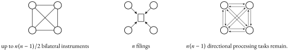
Figure 38. Common terms and the work that remains. With common terms, n filings replace up to n(n−1)/2 bilateral instruments, and n(n−1) directional processing tasks remain.
Under the hypotheses set out in the supplement’s Appendix F, filings of acceptance replace up to bilateral instruments, and directional processing tasks remain [8]. Voluntary participation requires a benefit that covers the costs of integration, of continuing obligations and of recognition. A filing states the reciprocal legal treatment that the institution offers and accepts, such as recognition of identity, together with any restrictions and any counterparties it refuses. A restriction narrows what the filer receives exactly as far as it narrows what the filer owes. Authenticated receipt of a filing opens a uniform window for refusal. A refusal changes only that pair’s relation and preserves the filing for others, and a published rule resolves conflicting declarations. Apart from its refusals, the filer chooses the same treatment for every counterparty. Executable equivalence between participants also needs matching clauses, contexts, evidence and local decisions. A treaty can establish reciprocal recognition by another route, and opening a technical interface adopts no terms at all.
Adding optional actions preserves the old feasible policies when costs, outcomes and liabilities stay unchanged.
A member that does not refuse a newcomer within the window stands in the relation with it, within the limits of what each of the two filed.
A counterparty need not take every step at once. It can verify a record it is shown, against the institution’s adopted checker, its adopted first state and the lineage of its keys, and it needs no agreement with the institution to do so. It can bind itself in advance to act on such a record. It can run a machine and decide jointly. Or it can recognize others’ results for stated purposes. Each move is its own decision, and none follows from checking a signature.
I.3. Funding, identity and competition
On a blockchain, validators are paid to repeat the same computation, and an incentive scheme makes that worth their while. A sovereign virtual machine exercises the powers of one institution, and no other machine can supply its approval. Identity therefore counts and numbers do not: running many processes or claiming many identities, which is called a Sybil attack, multiplies neither powers nor votes. The work is paid for by whoever needs it done, through contracted payers or committed public budgets. Institutions compete for eligible activity through their procedures, service terms and reliability, and operators compete to run machines under the same adopted contracts. An institution can replace its operator or leave, on the conditions of Appendix H and of I.4.
In a model where no institution loses by another’s joining, the bootstrap problem of this appendix has an exact answer.
Proposition (unaided start). Take a finite set of institutions. Suppose an institution that is not yet a member may join the set of members when plus the sum of over in is at least , where is what a machine is worth to it alone, what joining costs it, and , never negative, what a working relation with member is worth to it. Start from no members and let institutions join one at a time, in any order, until no institution outside may join. Then the process ends, and the final set does not depend on the order. It is empty exactly when no institution has at least . If the process starts instead from a set whose members stay, the final set is the smallest set containing that no institution outside may join.
Proof. Because no is negative, an institution that may join may join every larger set that does not contain it. Each step adds one institution to a finite set, so the process ends, and it ends in a set that no institution outside may join. Let be any set that contains the starting set and that no institution outside may join. Every institution that joins is in : the first one that was not would have joined a set lying inside , so it could have joined , which is impossible. The final set therefore lies inside every such and is one of them, so it is the smallest, whatever the order. Starting from no members, it is empty exactly when nobody may join the empty set. ∎
An institution operates its node or appoints an operator under its mandate. Operators who are paid to maintain a common state supply a shared protocol service, and a sovereign virtual machine exercises distinct institutional powers in addition. No other machine can supply its approval by repeating its computation, even when both run the same software.
Admission checks authenticated paths of authority, and agreement uses its bound roster and epoch. Security against multiplied processes or identities requires the adopted checks of identity and membership and fault domains that are independently controlled. Legal names alone establish none of these premises.
Contracted payers or committed public budgets fund execution, proving, retention and recovery. Companies pay for requested work and completed services, and institutions pay for public functions. Licenses and managed operations can fund engineering. Agreements fix the payer, the performance, the continuing costs, the liability and the penalties that an authority may impose.
Where participants may choose their institution, sovereign environments compete for eligible activity through their procedures, service terms, reliability and recognized relationships, within what the law allows. Qualified operators compete to run machines under the same adopted contracts. An institution may specialize in particular activities and evaluate outcomes such as the formation of businesses, investment received and employment.
Maintaining useful knowledge of the methods of fraud is a continuing service as behavior changes. A larger group of sharing institutions may make more permitted lessons available, which gives members a reason to invite others. The value of shared lessons depends on the receiver’s validation, the costs of integration, and the terms of disclosure and access.
I.4. Exit
Replacing an operator preserves the identity of the institution. Changing the governing institution needs transfers and receiving decisions.
A usable exit requires control rights over upgrades, keys, formats, archives, licenses, providers and the qualification of successors, together with usable successor services and the complete transfer of custody of Section 5 and Appendix H. Departure needs performance, transfer, amendment or discharge of duties, each made with proper authority, with the evidence and the encumbered resources accepted before the old control is cut off. Uninterrupted service requires a qualified successor or another provider that is obliged and able to serve.
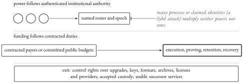
Figure 39. Funding and the right to leave. Funding follows contracted duties, and power follows authenticated institutional authority. Leaving requires control rights, accepted custody and usable successor services.
Appendix J. Limits and capacity
This appendix records three limits that no design removes, each with its own assumptions about observation and policy, and gives an analytical account of capacity.
J.1. Required public effects limit privacy
Suppose that two adjacent protected worlds require different public payments and that each forbids the other’s payment. Fix an observer who sees those payments. Let and be the distributions of that observer’s complete transcripts in world zero and world one.
Let be the event that the transcript records the payment required in world zero. Every successful completion in world zero implies this event. Every lawful policy in the opposing world gives it probability zero, so . Under differential privacy,
[ P_0(B_0)e^P_1(B_0)+=. ]
The probability of completion in world zero is therefore at most . Supplement §J.34 checks this obstruction within the declared policies and observation contract of the finite planner and identifies the observer and the revealing event. Changing that contract, the admitted receipt or the mandate for disclosure can alter the problem. Hiding the internal calculation alone cannot.
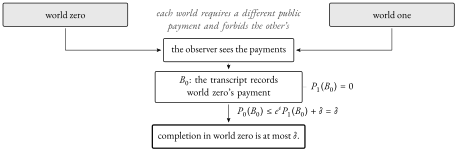
Figure 40. Required public effects and privacy. The observer compares world zero and world one, under the assumptions that each world’s lawful policies exclude the other’s payment and that the mechanism is differentially private. The gate-selection example below has separate hypotheses.
J.2. A reporting floor limits privacy and usefulness together
Consider a gate that releases nothing below two contributors, with no additional floor on the population to restrict selection. At adjacent sizes of cohort, require the probabilities of release and of refusal each to change by at most a factor of two plus an additive allowance. The recurrence (L3) of supplement §J.10 selects the largest feasible probability at each count among nondecreasing binary gates that start at zero. At six contributors:
| Additive gate allowance | Selection probability |
|---|---|
The bounded sampler draws a complete report from its rational distribution, including the selections of cohorts, the selected noisy fields and a fixed refusal, which means that no gate selected a cohort. Exhausting the budget of draws produces a separate fixed, padded failure whose probability does not depend on the dataset. The probabilities in the table are computed before any failure of the sampler, and a cohort’s probability of complete release multiplies its selection probability by the sampler’s probability of success. Supplement §§J.11 and J.30 give the complete distribution and the sampler. All outputs, refusals and timing enter the accounting. Durable charges precede release, and retries recover the same sample and bytes.
The profile requires adoption, by an authority with the power to adopt it, of its output and budget. A receiver that applies an aggregate release whose noise parameter is nominal, as in The Observation Corpus [6, §8], needs a justification for the actual statistic and the combined transcript.
J.3. Authentic data can leave a causal effect unidentified
A causal effect can remain unidentified although the data are authentic [7]. Two equally common types historically receive actions zero and one, with observed success of 20% and 80%. Two models fit these observations. In one, action one succeeds with probability 0.8 for both types. In the other it succeeds with that probability only for type one and never for type zero. Always choosing action one then gives 80% success under the first model and 40% under the second, against the same baseline of 50%.
A claim of improvement requires a fixed admitted set of models, a population, an outcome, a horizon and a baseline, including the costs of transition. Supplement §§J.31–J.32 compare all the models in such a finite set and expose cases that conflict although they are observationally equivalent. Excluding difficult applicants changes the objective.
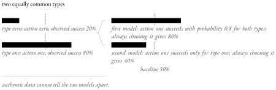
Figure 41. Observations and causal alternatives. Authenticity cannot distinguish the two models’ predictions for always choosing action one.
The planner can return a policy or show that none in its declared space meets the constraints. A wrapper for proposals of redesign separately assesses the proposer’s power, the semantics of the change, the evidence of improvement and the process for affected parties (supplement §J.33). Funding, the appointment of a provider or an authorized experiment may resolve an obstruction. A favorable calculation alone cannot authorize adoption.
J.4. Capacity for private histories
The construction for private histories combines the supplement’s Appendix C (private evaluation, authority, disclosure and recovery of holders), its Appendix D (recursion) and the complete resource schedule of its §§E.1 and E.5, including grants and observations. It charges for cold indexing, proving, verification, retrieval, copies, control and recovery.
Supplement §§E.1 and E.5 cost one billion daily maintenance tasks across 32 institutions, each handling 31,250,000. The complete schedule also includes 32 fresh private queries. The billion counts tasks. It does not count agents or independent private evaluations. Execution, proofs, grants, the accounting of observations, agreement, custody, installation and recovery are included.
Beyond the reserved capacity for proofs, each fresh query assumes delivered rates of bit operations, entropy bytes, I/O bytes and requests per second. The I/O rate is about 1.2 yottabytes per second for each query.
For the complete scheduled workload, one attempt takes at most 30,927.641 seconds. Two attempts and six hours of restoration take 83,455.282 seconds. The full construction reserves about 1.101 decimal yottabytes of scratch space for proofs.
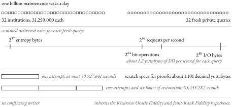
Figure 42. Conditional capacity for private histories. The conditional bound counts maintenance tasks and fresh queries in the stated workload with no conflicting writer. The bound keeps the cryptographic hypotheses it inherits.
This instance fixes the catalogue, two ordered sources, a bounded scope, rights allocated in advance, compatible contracts for current use and no conflicting writer. The schedule inherits Recursive Oracle Fidelity (Appendix C), Joint-Rank Fidelity (Appendix D), and the ancestral assumptions and accumulated loss of security of the recursive profile. The age and consent profiles have separate cryptographic assumptions and do not instantiate this recursive construction.
References
[1] Raeez Lorgat, Lex, research paper, September 2026. §§2–4, 5.1, 10 and 12.
[2] Raeez Lorgat, Op: Compliance-Carrying Operations, research paper, September 2026. §§2–7 and 11.
[3] Raeez Lorgat. The institutional world model: Continual learning across sovereign virtual machines. 21 September 2025. Companion paper.
[4] Sourav Das, Sisi Duan, Shengqi Liu, Atsuki Momose, Ling Ren and Victor Shoup, Asynchronous Consensus without Trusted Setup or Public-Key Cryptography, ACM CCS 2024. ePrint 2024/677.
[5] Benedikt Bünz, Jonathan Bootle, Dan Boneh, Andrew Poelstra, Pieter Wuille and Greg Maxwell, Bulletproofs: Short Proofs for Confidential Transactions and More, IEEE Symposium on Security and Privacy, 2018. Aggregated range proofs.
[6] Raeez Lorgat, The Observation Corpus, research paper, 2 April 2026. §8.
[7] Judea Pearl, Causal inference in statistics: An overview, Statistics Surveys 3, 2009, pp.96–146. §3.2.1, Definition 2.
[8] Raeez Lorgat, Accession Networks, research paper, September 2026. §§4.1–4.2, Theorem 4.5; §§4.5 and 6.3.
[9] Andrew J. I. Jones and Marek Sergot, A Formal Characterisation of Institutionalised Power, Logic Journal of the IGPL 4(3), 1996, pp.427–443. Author manuscript, §1.
[10] George C. Necula and Peter Lee, Safe Kernel Extensions Without Run-Time Checking, OSDI 1996, pp.229–243. Proof-carrying code, host policy and proof validation.
[11] Denis Merigoux, Nicolas Chataing and Jonathan Protzenko, Catala: A Programming Language for the Law, Proceedings of the ACM on Programming Languages 5(ICFP), 2021. §§3.1–3.4 and 4.5; Figures 11–12.
[12] Silvia Crafa, Cosimo Laneve and Giovanni Sartor, Pacta Sunt Servanda: Legal Contracts in Stipula, arXiv:2110.11069v1, 21 October 2021. §§3–5 and 7.
[13] Cosimo Laneve, Alessandro Parenti and Giovanni Sartor, Integration of statutory norms in computable contracts, Computer Law & Security Review 60, 106223, April 2026; published online 1 December 2025. §1. Author manuscript.
[14] Alexander Bernauer et al., Daml, arXiv:2303.03749v1, 7 March 2023. §§2.6, 3.2–3.4 and 3.6.
[15] Digital Asset Canton Team, Canton, whitepaper, 4 February 2020. §§2–3.
[16] Canton Network, Transaction lifecycle, official documentation, accessed 23 October 2026. Phases 4–5: validation, confirmation and commit.
[17] BIS Innovation Hub and participating central banks. Streamlining cross-border transaction compliance: Project Mandala. October 2024.
[18] Miguel Pires, Srivatsan Ravi and Rodrigo Rodrigues, Generalized Paxos Made Byzantine (and Less Complex), arXiv preprint, version 3, 2017. arXiv:1708.07575v3.
[19] Michael Coblenz et al., Obsidian: Typestate and Assets, arXiv:1909.03523v1, 8 September 2019. §6.4, Theorems 6.2–6.4.
[20] Sebastian Burckhardt et al., Durable Functions: Semantics for Stateful Serverless, Proceedings of the ACM on Programming Languages 5(OOPSLA), Article 133, October 2021. §4.5, §5.3, Theorem 5.3, and §6.3, Theorem 6.4.
[21] Temporal Technologies, Temporal Python SDK, official source and documentation.
[22] BIS Innovation Hub. Project Aurora: The power of data, technology and collaboration to combat money laundering across institutions and borders. May 2023.
[23] Mohammed Alshiekh, Roderick Bloem, Rüdiger Ehlers, Bettina Könighofer, Scott Niekum and Ufuk Topcu. Safe Reinforcement Learning via Shielding. AAAI 32(1), 2669–2678, 2018.
[24] Raeez Lorgat, Two Harnesses and a Limit, essay, August 2026.
[25] Satoshi Nakamoto, Bitcoin: A Peer-to-Peer Electronic Cash System, 2008.
[26] Jerome H. Saltzer and Michael D. Schroeder, The Protection of Information in Computer Systems, Proceedings of the IEEE 63(9), 1278–1308, 1975. §I.A.3.
[27] Vincent Ostrom, Charles M. Tiebout and Robert Warren, The Organization of Government in Metropolitan Areas: A Theoretical Inquiry, American Political Science Review 55(4), 831–842, 1961.
[28] Jim Gray and Leslie Lamport, Consensus on Transaction Commit, ACM Transactions on Database Systems 31(1), 133–160, 2006. §§1, 4.2 and 6.
[29] Edoardo Debenedetti et al., Defeating Prompt Injections by Design, arXiv:2503.18813v2, 24 June 2025.
[30] K. P. Eswaran, J. N. Gray, R. A. Lorie and I. L. Traiger, The Notions of Consistency and Predicate Locks in a Database System, Communications of the ACM, November 1976.
[31] Brendan McMahan, Eider Moore, Daniel Ramage, Seth Hampson and Blaise Aguera y Arcas, Communication-Efficient Learning of Deep Networks from Decentralized Data, AISTATS, PMLR 54, 1273–1282, 2017.
[32] Zirui Wang, Zihang Dai, Barnabas Poczos and Jaime Carbonell, Characterizing and Avoiding Negative Transfer, CVPR, 11293–11302, 2019.
[33] Kasra Abbaszadeh, Christodoulos Pappas, Jonathan Katz and Dimitrios Papadopoulos, Zero-Knowledge Proofs of Training for Deep Neural Networks, ACM CCS, 2024.
[34] Raeez Lorgat. Sovereign economies on a decentralized network: Technical supplement. 21 September 2025. Companion paper.
[35] Patrick E. O’Neil, The Escrow Transactional Method, ACM Transactions on Database Systems 11(4), 405–430, December 1986. §§2.1–2.2.